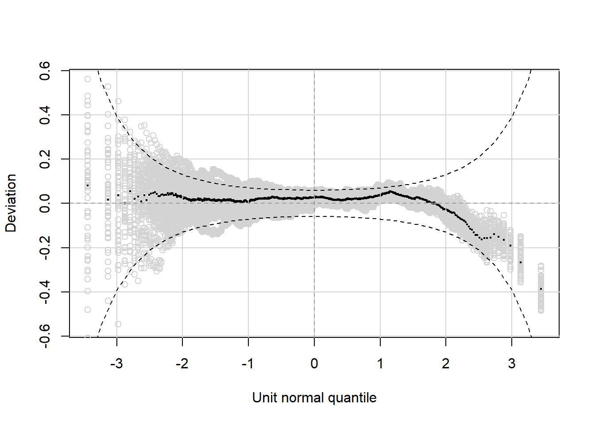
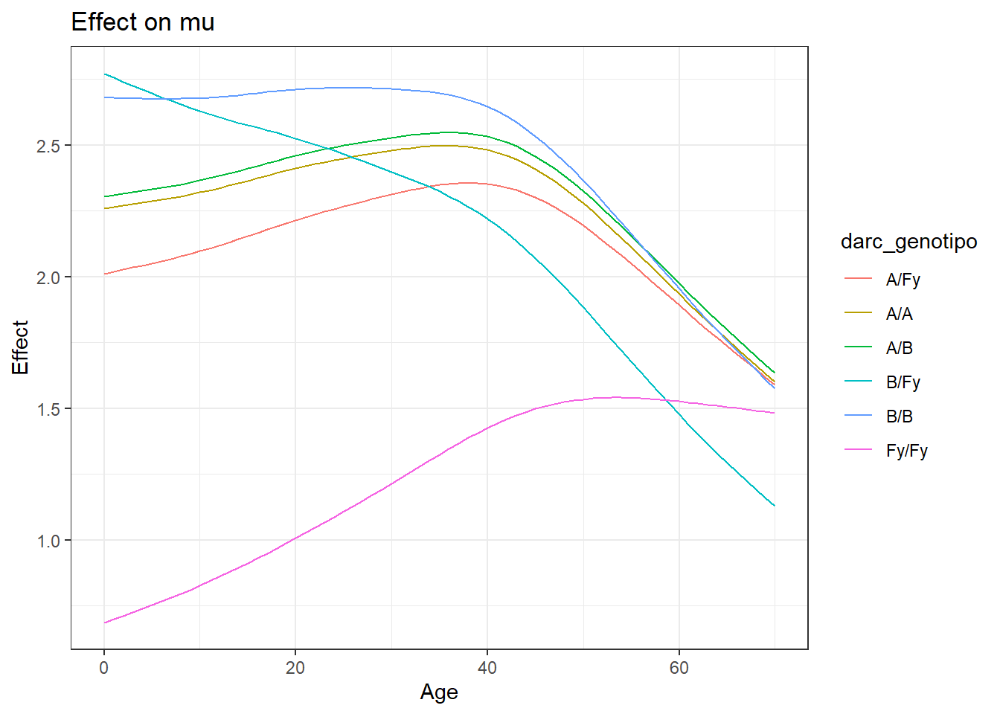

library(tidyverse)
library(gamlss)
set.seed(1)
# Preprocessing ---------------------------------
sivep <- readRDS("../data/sivep.rds") #To get the incidence
sivep <- sivep |> filter(MUN_RESI == 120033,
LOC_RESI %in% c(1,2,3,4,5,49,50,67,68, 69, 86))
cases <- data.frame(DT_EXAME = seq(min(sivep$DT_EXAME), max(sivep$DT_EXAME), by = "day")) |>
left_join(sivep |> group_by(DT_EXAME) |> tally())
cases$n[is.na(cases$n)] <- 0
cases <- cases |> filter(DT_EXAME >= as.Date("2014-01-01"), DT_EXAME <= as.Date("2018-12-31")) |> mutate(n = n/sum(n))
df.model <- readRDS("outputs/duffy4_model3.rds")
df.model$riqueza_cat <- cut(df.model$ind_riqueza,
breaks = quantile(df.model$ind_riqueza, probs = c(0, 1/3, 2/3, 1), na.rm = TRUE),
include.lowest = TRUE,
labels = c("Low", "Medium", "High"))
df.model.full <- df.model |> group_by(idindiv) |>
mutate(n.vivax = sum(n.vivax), n.falciparum = sum(n.falciparum), time.at.risk = sum(time.at.risk)) |>
filter(row_number() == 1) |> select(-c("yr", "date.infection", "date.episode", "plasmodium.infection", "plasmodium.episode"))
df.model.full$total.risk <- 0
for(i in 1:nrow(df.model.full)){
total.risk <- cases |> filter(DT_EXAME >= df.model.full$dt.min[i], DT_EXAME <= df.model.full$dt.max[i]) %>% .$n |> sum()
df.model.full$total.risk[i] <- total.risk
}
#df.model.full <- df.model.full |> mutate(total.risk = )
df.zinbi <- df.model.full |> ungroup() |> select(n.vivax, house, riqueza_cat, sexo, age, darc_genotipo, total.risk)
df.zinbi <- df.zinbi |> mutate(age.bin = cut(age, c(-Inf, 16, 40, Inf)))
df.zinbi$age[df.zinbi$age > 70] <- 70
I <- sample(1:nrow(df.zinbi), nrow(df.zinbi), replace = F)
df.zinbi <- df.zinbi[I,]
df.zinbi <- df.zinbi |> mutate(duffy.positive = (darc_genotipo != "Fy/Fy"))
partition <- sample(2, nrow(df.zinbi), replace=TRUE, prob=c(0.7,0.3))
df.zinbi <- as.data.frame(df.zinbi)
df.zinbi$darc_genotipo <- factor(df.zinbi$darc_genotipo, levels = c("A/Fy", "A/A", "A/B", "B/Fy", "B/B", "Fy/Fy"))Base model comparison
Preprocessing
Search for the best model (using discrete age groups)
mu.formula.prefix <- "n.vivax ~ age.bin*darc_genotipo + riqueza_cat + sexo"
mu.candidate <- c("+ log(total.risk)", "+ total.risk", "+ exp(total.risk)")
nu.candidate <- c("", "+ log(total.risk)", "+ total.risk", "+ exp(total.risk)")
nu.candidate.age <- c("", "+ age.bin")
nu.candidate.genotype <- c("darc_genotipo ", "duffy.positive ")
model.fit <- list()
model.fit.full <- list()
for(mu.suffix in mu.candidate){
for(nu.suffix in nu.candidate){
for(nu.suffix.age in nu.candidate.age){
for(nu.suffix.genotype in nu.candidate.genotype){
label <- paste0("mu: ", mu.suffix, "; nu: ", nu.suffix.genotype, nu.suffix, nu.suffix.age)
mu.formula <- as.formula(paste0(mu.formula.prefix, mu.suffix))
nu.string <- paste0("~ ", nu.suffix.genotype, nu.suffix, nu.suffix.age)
if(nu.string == "~ "){
nu.string <- "~ 1"
}
nu.formula <- as.formula(nu.string)
model.fit[[label]] <- gamlssVGD(mu.formula,
sigma.formula = ~ 1,
nu.formula = nu.formula,
family = ZINBI(),
method = RS(500),
rand = partition,
data = df.zinbi)
model.fit.full[[label]] <- gamlss(mu.formula,
sigma.formula = ~ 1,
nu.formula = nu.formula,
family = ZINBI(),
method = RS(500),
data = df.zinbi)
}
}
}
}GAMLSS-RS iteration 1: Global Deviance = 4923.693
GAMLSS-RS iteration 2: Global Deviance = 4914.482
GAMLSS-RS iteration 3: Global Deviance = 4920.599
GAMLSS-RS iteration 4: Global Deviance = 4925.372
GAMLSS-RS iteration 5: Global Deviance = 4926.923
GAMLSS-RS iteration 6: Global Deviance = 4928.232
GAMLSS-RS iteration 7: Global Deviance = 4928.474
GAMLSS-RS iteration 8: Global Deviance = 4928.566
GAMLSS-RS iteration 9: Global Deviance = 4928.599
GAMLSS-RS iteration 10: Global Deviance = 4928.61
GAMLSS-RS iteration 11: Global Deviance = 4928.613
GAMLSS-RS iteration 12: Global Deviance = 4928.614 GAMLSS-RS iteration 1: Global Deviance = 4925.599
GAMLSS-RS iteration 2: Global Deviance = 4914.343
GAMLSS-RS iteration 3: Global Deviance = 4919.519
GAMLSS-RS iteration 4: Global Deviance = 4923.757
GAMLSS-RS iteration 5: Global Deviance = 4925.945
GAMLSS-RS iteration 6: Global Deviance = 4926.858
GAMLSS-RS iteration 7: Global Deviance = 4927.223
GAMLSS-RS iteration 8: Global Deviance = 4927.369
GAMLSS-RS iteration 9: Global Deviance = 4927.427
GAMLSS-RS iteration 10: Global Deviance = 4927.451
GAMLSS-RS iteration 11: Global Deviance = 4927.46
GAMLSS-RS iteration 12: Global Deviance = 4927.462
GAMLSS-RS iteration 13: Global Deviance = 4927.462 GAMLSS-RS iteration 1: Global Deviance = 4908.371
GAMLSS-RS iteration 2: Global Deviance = 4880.997
GAMLSS-RS iteration 3: Global Deviance = 4881.418
GAMLSS-RS iteration 4: Global Deviance = 4881.669
GAMLSS-RS iteration 5: Global Deviance = 4881.89
GAMLSS-RS iteration 6: Global Deviance = 4882.088
GAMLSS-RS iteration 7: Global Deviance = 4882.234
GAMLSS-RS iteration 8: Global Deviance = 4882.345
GAMLSS-RS iteration 9: Global Deviance = 4882.427
GAMLSS-RS iteration 10: Global Deviance = 4882.487
GAMLSS-RS iteration 11: Global Deviance = 4882.53
GAMLSS-RS iteration 12: Global Deviance = 4882.562
GAMLSS-RS iteration 13: Global Deviance = 4882.584
GAMLSS-RS iteration 14: Global Deviance = 4882.6
GAMLSS-RS iteration 15: Global Deviance = 4882.612
GAMLSS-RS iteration 16: Global Deviance = 4882.619
GAMLSS-RS iteration 17: Global Deviance = 4882.625
GAMLSS-RS iteration 18: Global Deviance = 4882.629
GAMLSS-RS iteration 19: Global Deviance = 4882.631
GAMLSS-RS iteration 20: Global Deviance = 4882.633
GAMLSS-RS iteration 21: Global Deviance = 4882.635
GAMLSS-RS iteration 22: Global Deviance = 4882.636
GAMLSS-RS iteration 23: Global Deviance = 4882.636 GAMLSS-RS iteration 1: Global Deviance = 4909.907
GAMLSS-RS iteration 2: Global Deviance = 4882.437
GAMLSS-RS iteration 3: Global Deviance = 4882.641
GAMLSS-RS iteration 4: Global Deviance = 4882.588
GAMLSS-RS iteration 5: Global Deviance = 4882.571
GAMLSS-RS iteration 6: Global Deviance = 4882.547
GAMLSS-RS iteration 7: Global Deviance = 4882.539
GAMLSS-RS iteration 8: Global Deviance = 4882.534
GAMLSS-RS iteration 9: Global Deviance = 4882.53
GAMLSS-RS iteration 10: Global Deviance = 4882.526
GAMLSS-RS iteration 11: Global Deviance = 4882.525
GAMLSS-RS iteration 12: Global Deviance = 4882.521
GAMLSS-RS iteration 13: Global Deviance = 4882.519
GAMLSS-RS iteration 14: Global Deviance = 4882.518
GAMLSS-RS iteration 15: Global Deviance = 4882.516
GAMLSS-RS iteration 16: Global Deviance = 4882.517
GAMLSS-RS iteration 17: Global Deviance = 4882.399
GAMLSS-RS iteration 18: Global Deviance = 4882.5
GAMLSS-RS iteration 19: Global Deviance = 4882.509
GAMLSS-RS iteration 20: Global Deviance = 4882.509 GAMLSS-RS iteration 1: Global Deviance = 4923.55
GAMLSS-RS iteration 2: Global Deviance = 4905.996
GAMLSS-RS iteration 3: Global Deviance = 4906.331
GAMLSS-RS iteration 4: Global Deviance = 4907.007
GAMLSS-RS iteration 5: Global Deviance = 4906.921
GAMLSS-RS iteration 6: Global Deviance = 4907.986
GAMLSS-RS iteration 7: Global Deviance = 4908.213
GAMLSS-RS iteration 8: Global Deviance = 4908.337
GAMLSS-RS iteration 9: Global Deviance = 4908.4
GAMLSS-RS iteration 10: Global Deviance = 4908.433
GAMLSS-RS iteration 11: Global Deviance = 4908.45
GAMLSS-RS iteration 12: Global Deviance = 4908.459
GAMLSS-RS iteration 13: Global Deviance = 4908.464
GAMLSS-RS iteration 14: Global Deviance = 4908.466
GAMLSS-RS iteration 15: Global Deviance = 4908.467 GAMLSS-RS iteration 1: Global Deviance = 4923.487
GAMLSS-RS iteration 2: Global Deviance = 4905.393
GAMLSS-RS iteration 3: Global Deviance = 4905.702
GAMLSS-RS iteration 4: Global Deviance = 4906.141
GAMLSS-RS iteration 5: Global Deviance = 4906.493
GAMLSS-RS iteration 6: Global Deviance = 4906.723
GAMLSS-RS iteration 7: Global Deviance = 4906.86
GAMLSS-RS iteration 8: Global Deviance = 4906.937
GAMLSS-RS iteration 9: Global Deviance = 4906.98
GAMLSS-RS iteration 10: Global Deviance = 4907.004
GAMLSS-RS iteration 11: Global Deviance = 4907.016
GAMLSS-RS iteration 12: Global Deviance = 4907.024
GAMLSS-RS iteration 13: Global Deviance = 4907.027
GAMLSS-RS iteration 14: Global Deviance = 4907.03
GAMLSS-RS iteration 15: Global Deviance = 4907.031
GAMLSS-RS iteration 16: Global Deviance = 4907.032 GAMLSS-RS iteration 1: Global Deviance = 4908.52
GAMLSS-RS iteration 2: Global Deviance = 4883.559
GAMLSS-RS iteration 3: Global Deviance = 4886.1
GAMLSS-RS iteration 4: Global Deviance = 4888.135
GAMLSS-RS iteration 5: Global Deviance = 4890.042
GAMLSS-RS iteration 6: Global Deviance = 4891.68
GAMLSS-RS iteration 7: Global Deviance = 4892.786
GAMLSS-RS iteration 8: Global Deviance = 4893.927
GAMLSS-RS iteration 9: Global Deviance = 4894.603
GAMLSS-RS iteration 10: Global Deviance = 4895.036
GAMLSS-RS iteration 11: Global Deviance = 4895.316
GAMLSS-RS iteration 12: Global Deviance = 4895.533
GAMLSS-RS iteration 13: Global Deviance = 4895.665
GAMLSS-RS iteration 14: Global Deviance = 4895.753
GAMLSS-RS iteration 15: Global Deviance = 4895.802
GAMLSS-RS iteration 16: Global Deviance = 4895.837
GAMLSS-RS iteration 17: Global Deviance = 4895.86
GAMLSS-RS iteration 18: Global Deviance = 4895.873
GAMLSS-RS iteration 19: Global Deviance = 4895.881
GAMLSS-RS iteration 20: Global Deviance = 4895.886
GAMLSS-RS iteration 21: Global Deviance = 4895.888
GAMLSS-RS iteration 22: Global Deviance = 4895.891
GAMLSS-RS iteration 23: Global Deviance = 4895.893
GAMLSS-RS iteration 24: Global Deviance = 4895.892 GAMLSS-RS iteration 1: Global Deviance = 4908.55
GAMLSS-RS iteration 2: Global Deviance = 4884.48
GAMLSS-RS iteration 3: Global Deviance = 4886.875
GAMLSS-RS iteration 4: Global Deviance = 4888.745
GAMLSS-RS iteration 5: Global Deviance = 4890.307
GAMLSS-RS iteration 6: Global Deviance = 4891.511
GAMLSS-RS iteration 7: Global Deviance = 4892.386
GAMLSS-RS iteration 8: Global Deviance = 4892.989
GAMLSS-RS iteration 9: Global Deviance = 4893.394
GAMLSS-RS iteration 10: Global Deviance = 4893.656
GAMLSS-RS iteration 11: Global Deviance = 4893.834
GAMLSS-RS iteration 12: Global Deviance = 4893.94
GAMLSS-RS iteration 13: Global Deviance = 4894.019
GAMLSS-RS iteration 14: Global Deviance = 4894.064
GAMLSS-RS iteration 15: Global Deviance = 4894.096
GAMLSS-RS iteration 16: Global Deviance = 4894.112
GAMLSS-RS iteration 17: Global Deviance = 4894.117
GAMLSS-RS iteration 18: Global Deviance = 4894.131
GAMLSS-RS iteration 19: Global Deviance = 4894.139
GAMLSS-RS iteration 20: Global Deviance = 4894.14
GAMLSS-RS iteration 21: Global Deviance = 4894.138
GAMLSS-RS iteration 22: Global Deviance = 4894.141
GAMLSS-RS iteration 23: Global Deviance = 4894.139
GAMLSS-RS iteration 24: Global Deviance = 4894.139 GAMLSS-RS iteration 1: Global Deviance = 4919.58
GAMLSS-RS iteration 2: Global Deviance = 4898.08
GAMLSS-RS iteration 3: Global Deviance = 4898.088
GAMLSS-RS iteration 4: Global Deviance = 4898.423
GAMLSS-RS iteration 5: Global Deviance = 4898.763
GAMLSS-RS iteration 6: Global Deviance = 4899.001
GAMLSS-RS iteration 7: Global Deviance = 4899.152
GAMLSS-RS iteration 8: Global Deviance = 4899.243
GAMLSS-RS iteration 9: Global Deviance = 4899.295
GAMLSS-RS iteration 10: Global Deviance = 4899.325
GAMLSS-RS iteration 11: Global Deviance = 4899.343
GAMLSS-RS iteration 12: Global Deviance = 4899.353
GAMLSS-RS iteration 13: Global Deviance = 4899.358
GAMLSS-RS iteration 14: Global Deviance = 4899.362
GAMLSS-RS iteration 15: Global Deviance = 4899.363
GAMLSS-RS iteration 16: Global Deviance = 4899.364 GAMLSS-RS iteration 1: Global Deviance = 4919.054
GAMLSS-RS iteration 2: Global Deviance = 4897.225
GAMLSS-RS iteration 3: Global Deviance = 4897.382
GAMLSS-RS iteration 4: Global Deviance = 4897.531
GAMLSS-RS iteration 5: Global Deviance = 4897.688
GAMLSS-RS iteration 6: Global Deviance = 4897.8
GAMLSS-RS iteration 7: Global Deviance = 4897.875
GAMLSS-RS iteration 8: Global Deviance = 4897.922
GAMLSS-RS iteration 9: Global Deviance = 4897.951
GAMLSS-RS iteration 10: Global Deviance = 4897.969
GAMLSS-RS iteration 11: Global Deviance = 4897.979
GAMLSS-RS iteration 12: Global Deviance = 4897.985
GAMLSS-RS iteration 13: Global Deviance = 4897.989
GAMLSS-RS iteration 14: Global Deviance = 4897.992
GAMLSS-RS iteration 15: Global Deviance = 4897.993 GAMLSS-RS iteration 1: Global Deviance = 4904.599
GAMLSS-RS iteration 2: Global Deviance = 4877.599
GAMLSS-RS iteration 3: Global Deviance = 4880.4
GAMLSS-RS iteration 4: Global Deviance = 4882.907
GAMLSS-RS iteration 5: Global Deviance = 4884.997
GAMLSS-RS iteration 6: Global Deviance = 4886.545
GAMLSS-RS iteration 7: Global Deviance = 4887.604
GAMLSS-RS iteration 8: Global Deviance = 4888.279
GAMLSS-RS iteration 9: Global Deviance = 4888.686
GAMLSS-RS iteration 10: Global Deviance = 4888.921
GAMLSS-RS iteration 11: Global Deviance = 4889.062
GAMLSS-RS iteration 12: Global Deviance = 4889.118
GAMLSS-RS iteration 13: Global Deviance = 4889.196
GAMLSS-RS iteration 14: Global Deviance = 4889.24
GAMLSS-RS iteration 15: Global Deviance = 4889.259
GAMLSS-RS iteration 16: Global Deviance = 4889.269
GAMLSS-RS iteration 17: Global Deviance = 4889.275
GAMLSS-RS iteration 18: Global Deviance = 4889.277
GAMLSS-RS iteration 19: Global Deviance = 4889.279
GAMLSS-RS iteration 20: Global Deviance = 4889.278
GAMLSS-RS iteration 21: Global Deviance = 4889.277
GAMLSS-RS iteration 22: Global Deviance = 4889.256
GAMLSS-RS iteration 23: Global Deviance = 4889.285
GAMLSS-RS iteration 24: Global Deviance = 4889.283
GAMLSS-RS iteration 25: Global Deviance = 4889.284 GAMLSS-RS iteration 1: Global Deviance = 4904.269
GAMLSS-RS iteration 2: Global Deviance = 4878.163
GAMLSS-RS iteration 3: Global Deviance = 4880.827
GAMLSS-RS iteration 4: Global Deviance = 4882.847
GAMLSS-RS iteration 5: Global Deviance = 4884.455
GAMLSS-RS iteration 6: Global Deviance = 4885.608
GAMLSS-RS iteration 7: Global Deviance = 4886.376
GAMLSS-RS iteration 8: Global Deviance = 4886.864
GAMLSS-RS iteration 9: Global Deviance = 4887.164
GAMLSS-RS iteration 10: Global Deviance = 4887.345
GAMLSS-RS iteration 11: Global Deviance = 4887.469
GAMLSS-RS iteration 12: Global Deviance = 4887.533
GAMLSS-RS iteration 13: Global Deviance = 4887.574
GAMLSS-RS iteration 14: Global Deviance = 4887.593
GAMLSS-RS iteration 15: Global Deviance = 4887.606
GAMLSS-RS iteration 16: Global Deviance = 4887.613
GAMLSS-RS iteration 17: Global Deviance = 4887.617
GAMLSS-RS iteration 18: Global Deviance = 4887.62
GAMLSS-RS iteration 19: Global Deviance = 4887.622
GAMLSS-RS iteration 20: Global Deviance = 4887.622 GAMLSS-RS iteration 1: Global Deviance = 4917.572
GAMLSS-RS iteration 2: Global Deviance = 4895.54
GAMLSS-RS iteration 3: Global Deviance = 4895.505
GAMLSS-RS iteration 4: Global Deviance = 4895.778
GAMLSS-RS iteration 5: Global Deviance = 4896.07
GAMLSS-RS iteration 6: Global Deviance = 4896.283
GAMLSS-RS iteration 7: Global Deviance = 4896.422
GAMLSS-RS iteration 8: Global Deviance = 4896.509
GAMLSS-RS iteration 9: Global Deviance = 4896.56
GAMLSS-RS iteration 10: Global Deviance = 4896.591
GAMLSS-RS iteration 11: Global Deviance = 4896.609
GAMLSS-RS iteration 12: Global Deviance = 4896.619
GAMLSS-RS iteration 13: Global Deviance = 4896.626
GAMLSS-RS iteration 14: Global Deviance = 4896.628
GAMLSS-RS iteration 15: Global Deviance = 4896.631
GAMLSS-RS iteration 16: Global Deviance = 4896.632
GAMLSS-RS iteration 17: Global Deviance = 4896.632 GAMLSS-RS iteration 1: Global Deviance = 4916.968
GAMLSS-RS iteration 2: Global Deviance = 4894.674
GAMLSS-RS iteration 3: Global Deviance = 4894.41
GAMLSS-RS iteration 4: Global Deviance = 4894.918
GAMLSS-RS iteration 5: Global Deviance = 4895.037
GAMLSS-RS iteration 6: Global Deviance = 4895.132
GAMLSS-RS iteration 7: Global Deviance = 4895.197
GAMLSS-RS iteration 8: Global Deviance = 4895.239
GAMLSS-RS iteration 9: Global Deviance = 4895.266
GAMLSS-RS iteration 10: Global Deviance = 4895.283
GAMLSS-RS iteration 11: Global Deviance = 4895.292
GAMLSS-RS iteration 12: Global Deviance = 4895.298
GAMLSS-RS iteration 13: Global Deviance = 4895.302
GAMLSS-RS iteration 14: Global Deviance = 4895.304
GAMLSS-RS iteration 15: Global Deviance = 4895.306
GAMLSS-RS iteration 16: Global Deviance = 4895.306 GAMLSS-RS iteration 1: Global Deviance = 4902.735
GAMLSS-RS iteration 2: Global Deviance = 4875.559
GAMLSS-RS iteration 3: Global Deviance = 4878.361
GAMLSS-RS iteration 4: Global Deviance = 4880.841
GAMLSS-RS iteration 5: Global Deviance = 4882.812
GAMLSS-RS iteration 6: Global Deviance = 4884.234
GAMLSS-RS iteration 7: Global Deviance = 4885.189
GAMLSS-RS iteration 8: Global Deviance = 4885.791
GAMLSS-RS iteration 9: Global Deviance = 4886.148
GAMLSS-RS iteration 10: Global Deviance = 4886.351
GAMLSS-RS iteration 11: Global Deviance = 4886.472
GAMLSS-RS iteration 12: Global Deviance = 4886.516
GAMLSS-RS iteration 13: Global Deviance = 4886.609
GAMLSS-RS iteration 14: Global Deviance = 4886.629
GAMLSS-RS iteration 15: Global Deviance = 4886.645
GAMLSS-RS iteration 16: Global Deviance = 4886.653
GAMLSS-RS iteration 17: Global Deviance = 4886.658
GAMLSS-RS iteration 18: Global Deviance = 4886.661
GAMLSS-RS iteration 19: Global Deviance = 4886.613
GAMLSS-RS iteration 20: Global Deviance = 4886.665
GAMLSS-RS iteration 21: Global Deviance = 4886.664
GAMLSS-RS iteration 22: Global Deviance = 4886.664 GAMLSS-RS iteration 1: Global Deviance = 4902.375
GAMLSS-RS iteration 2: Global Deviance = 4876.089
GAMLSS-RS iteration 3: Global Deviance = 4878.685
GAMLSS-RS iteration 4: Global Deviance = 4880.689
GAMLSS-RS iteration 5: Global Deviance = 4882.249
GAMLSS-RS iteration 6: Global Deviance = 4883.354
GAMLSS-RS iteration 7: Global Deviance = 4884.084
GAMLSS-RS iteration 8: Global Deviance = 4884.542
GAMLSS-RS iteration 9: Global Deviance = 4884.821
GAMLSS-RS iteration 10: Global Deviance = 4884.989
GAMLSS-RS iteration 11: Global Deviance = 4885.094
GAMLSS-RS iteration 12: Global Deviance = 4885.153
GAMLSS-RS iteration 13: Global Deviance = 4885.14
GAMLSS-RS iteration 14: Global Deviance = 4885.216
GAMLSS-RS iteration 15: Global Deviance = 4885.231
GAMLSS-RS iteration 16: Global Deviance = 4885.236
GAMLSS-RS iteration 17: Global Deviance = 4885.239
GAMLSS-RS iteration 18: Global Deviance = 4885.243
GAMLSS-RS iteration 19: Global Deviance = 4885.243 GAMLSS-RS iteration 1: Global Deviance = 4923.081
GAMLSS-RS iteration 2: Global Deviance = 4915.579
GAMLSS-RS iteration 3: Global Deviance = 4924.387
GAMLSS-RS iteration 4: Global Deviance = 4929.974
GAMLSS-RS iteration 5: Global Deviance = 4931.586
GAMLSS-RS iteration 6: Global Deviance = 4932.78
GAMLSS-RS iteration 7: Global Deviance = 4932.995
GAMLSS-RS iteration 8: Global Deviance = 4933.07
GAMLSS-RS iteration 9: Global Deviance = 4933.096
GAMLSS-RS iteration 10: Global Deviance = 4933.106
GAMLSS-RS iteration 11: Global Deviance = 4933.11
GAMLSS-RS iteration 12: Global Deviance = 4933.111 GAMLSS-RS iteration 1: Global Deviance = 4925.291
GAMLSS-RS iteration 2: Global Deviance = 4915.498
GAMLSS-RS iteration 3: Global Deviance = 4923.129
GAMLSS-RS iteration 4: Global Deviance = 4928.287
GAMLSS-RS iteration 5: Global Deviance = 4930.648
GAMLSS-RS iteration 6: Global Deviance = 4931.497
GAMLSS-RS iteration 7: Global Deviance = 4931.781
GAMLSS-RS iteration 8: Global Deviance = 4931.893
GAMLSS-RS iteration 9: Global Deviance = 4931.936
GAMLSS-RS iteration 10: Global Deviance = 4931.954
GAMLSS-RS iteration 11: Global Deviance = 4931.96
GAMLSS-RS iteration 12: Global Deviance = 4931.962
GAMLSS-RS iteration 13: Global Deviance = 4931.962 GAMLSS-RS iteration 1: Global Deviance = 4908.419
GAMLSS-RS iteration 2: Global Deviance = 4881.794
GAMLSS-RS iteration 3: Global Deviance = 4883.075
GAMLSS-RS iteration 4: Global Deviance = 4883.907
GAMLSS-RS iteration 5: Global Deviance = 4884.574
GAMLSS-RS iteration 6: Global Deviance = 4885.025
GAMLSS-RS iteration 7: Global Deviance = 4885.324
GAMLSS-RS iteration 8: Global Deviance = 4885.52
GAMLSS-RS iteration 9: Global Deviance = 4885.656
GAMLSS-RS iteration 10: Global Deviance = 4885.747
GAMLSS-RS iteration 11: Global Deviance = 4885.806
GAMLSS-RS iteration 12: Global Deviance = 4885.845
GAMLSS-RS iteration 13: Global Deviance = 4885.84
GAMLSS-RS iteration 14: Global Deviance = 4885.8
GAMLSS-RS iteration 15: Global Deviance = 4885.874
GAMLSS-RS iteration 16: Global Deviance = 4885.894
GAMLSS-RS iteration 17: Global Deviance = 4885.925
GAMLSS-RS iteration 18: Global Deviance = 4885.898
GAMLSS-RS iteration 19: Global Deviance = 4885.903
GAMLSS-RS iteration 20: Global Deviance = 4885.904
GAMLSS-RS iteration 21: Global Deviance = 4885.907
GAMLSS-RS iteration 22: Global Deviance = 4885.909
GAMLSS-RS iteration 23: Global Deviance = 4885.914
GAMLSS-RS iteration 24: Global Deviance = 4885.909
GAMLSS-RS iteration 25: Global Deviance = 4885.909 GAMLSS-RS iteration 1: Global Deviance = 4910.293
GAMLSS-RS iteration 2: Global Deviance = 4883.17
GAMLSS-RS iteration 3: Global Deviance = 4883.828
GAMLSS-RS iteration 4: Global Deviance = 4883.951
GAMLSS-RS iteration 5: Global Deviance = 4884.037
GAMLSS-RS iteration 6: Global Deviance = 4884.096
GAMLSS-RS iteration 7: Global Deviance = 4884.146
GAMLSS-RS iteration 8: Global Deviance = 4884.181
GAMLSS-RS iteration 9: Global Deviance = 4884.213
GAMLSS-RS iteration 10: Global Deviance = 4884.227
GAMLSS-RS iteration 11: Global Deviance = 4884.222
GAMLSS-RS iteration 12: Global Deviance = 4884.245
GAMLSS-RS iteration 13: Global Deviance = 4884.251
GAMLSS-RS iteration 14: Global Deviance = 4884.255
GAMLSS-RS iteration 15: Global Deviance = 4884.257
GAMLSS-RS iteration 16: Global Deviance = 4884.257 GAMLSS-RS iteration 1: Global Deviance = 4920.226
GAMLSS-RS iteration 2: Global Deviance = 4901.449
GAMLSS-RS iteration 3: Global Deviance = 4902.533
GAMLSS-RS iteration 4: Global Deviance = 4903.669
GAMLSS-RS iteration 5: Global Deviance = 4904.442
GAMLSS-RS iteration 6: Global Deviance = 4904.893
GAMLSS-RS iteration 7: Global Deviance = 4905.141
GAMLSS-RS iteration 8: Global Deviance = 4905.272
GAMLSS-RS iteration 9: Global Deviance = 4905.341
GAMLSS-RS iteration 10: Global Deviance = 4905.379
GAMLSS-RS iteration 11: Global Deviance = 4905.399
GAMLSS-RS iteration 12: Global Deviance = 4905.408
GAMLSS-RS iteration 13: Global Deviance = 4905.413
GAMLSS-RS iteration 14: Global Deviance = 4905.416
GAMLSS-RS iteration 15: Global Deviance = 4905.418
GAMLSS-RS iteration 16: Global Deviance = 4905.418 GAMLSS-RS iteration 1: Global Deviance = 4920.488
GAMLSS-RS iteration 2: Global Deviance = 4900.642
GAMLSS-RS iteration 3: Global Deviance = 4901.807
GAMLSS-RS iteration 4: Global Deviance = 4902.595
GAMLSS-RS iteration 5: Global Deviance = 4903.185
GAMLSS-RS iteration 6: Global Deviance = 4903.506
GAMLSS-RS iteration 7: Global Deviance = 4903.679
GAMLSS-RS iteration 8: Global Deviance = 4903.768
GAMLSS-RS iteration 9: Global Deviance = 4903.813
GAMLSS-RS iteration 10: Global Deviance = 4903.836
GAMLSS-RS iteration 11: Global Deviance = 4903.848
GAMLSS-RS iteration 12: Global Deviance = 4903.855
GAMLSS-RS iteration 13: Global Deviance = 4903.858
GAMLSS-RS iteration 14: Global Deviance = 4903.86
GAMLSS-RS iteration 15: Global Deviance = 4903.861
GAMLSS-RS iteration 16: Global Deviance = 4903.862 GAMLSS-RS iteration 1: Global Deviance = 4905.84
GAMLSS-RS iteration 2: Global Deviance = 4878.208
GAMLSS-RS iteration 3: Global Deviance = 4879.762
GAMLSS-RS iteration 4: Global Deviance = 4880.923
GAMLSS-RS iteration 5: Global Deviance = 4882.159
GAMLSS-RS iteration 6: Global Deviance = 4883.32
GAMLSS-RS iteration 7: Global Deviance = 4884.349
GAMLSS-RS iteration 8: Global Deviance = 4885.214
GAMLSS-RS iteration 9: Global Deviance = 4885.823
GAMLSS-RS iteration 10: Global Deviance = 4886.442
GAMLSS-RS iteration 11: Global Deviance = 4886.851
GAMLSS-RS iteration 12: Global Deviance = 4887.155
GAMLSS-RS iteration 13: Global Deviance = 4887.391
GAMLSS-RS iteration 14: Global Deviance = 4887.541
GAMLSS-RS iteration 15: Global Deviance = 4887.659
GAMLSS-RS iteration 16: Global Deviance = 4887.734
GAMLSS-RS iteration 17: Global Deviance = 4887.786
GAMLSS-RS iteration 18: Global Deviance = 4887.825
GAMLSS-RS iteration 19: Global Deviance = 4887.851
GAMLSS-RS iteration 20: Global Deviance = 4887.869
GAMLSS-RS iteration 21: Global Deviance = 4887.882
GAMLSS-RS iteration 22: Global Deviance = 4887.892
GAMLSS-RS iteration 23: Global Deviance = 4887.896
GAMLSS-RS iteration 24: Global Deviance = 4887.9
GAMLSS-RS iteration 25: Global Deviance = 4887.902
GAMLSS-RS iteration 26: Global Deviance = 4887.904
GAMLSS-RS iteration 27: Global Deviance = 4887.905 GAMLSS-RS iteration 1: Global Deviance = 4906.168
GAMLSS-RS iteration 2: Global Deviance = 4878.943
GAMLSS-RS iteration 3: Global Deviance = 4880.767
GAMLSS-RS iteration 4: Global Deviance = 4881.986
GAMLSS-RS iteration 5: Global Deviance = 4883.115
GAMLSS-RS iteration 6: Global Deviance = 4884.037
GAMLSS-RS iteration 7: Global Deviance = 4884.752
GAMLSS-RS iteration 8: Global Deviance = 4885.284
GAMLSS-RS iteration 9: Global Deviance = 4885.666
GAMLSS-RS iteration 10: Global Deviance = 4885.935
GAMLSS-RS iteration 11: Global Deviance = 4886.123
GAMLSS-RS iteration 12: Global Deviance = 4886.274
GAMLSS-RS iteration 13: Global Deviance = 4886.363
GAMLSS-RS iteration 14: Global Deviance = 4886.42
GAMLSS-RS iteration 15: Global Deviance = 4886.462
GAMLSS-RS iteration 16: Global Deviance = 4886.49
GAMLSS-RS iteration 17: Global Deviance = 4886.508
GAMLSS-RS iteration 18: Global Deviance = 4886.519
GAMLSS-RS iteration 19: Global Deviance = 4886.526
GAMLSS-RS iteration 20: Global Deviance = 4886.531
GAMLSS-RS iteration 21: Global Deviance = 4886.535
GAMLSS-RS iteration 22: Global Deviance = 4886.537
GAMLSS-RS iteration 23: Global Deviance = 4886.538
GAMLSS-RS iteration 24: Global Deviance = 4886.539
GAMLSS-RS iteration 25: Global Deviance = 4886.54 GAMLSS-RS iteration 1: Global Deviance = 4921.117
GAMLSS-RS iteration 2: Global Deviance = 4896.706
GAMLSS-RS iteration 3: Global Deviance = 4897.158
GAMLSS-RS iteration 4: Global Deviance = 4897.719
GAMLSS-RS iteration 5: Global Deviance = 4898.187
GAMLSS-RS iteration 6: Global Deviance = 4898.472
GAMLSS-RS iteration 7: Global Deviance = 4898.64
GAMLSS-RS iteration 8: Global Deviance = 4898.734
GAMLSS-RS iteration 9: Global Deviance = 4898.785
GAMLSS-RS iteration 10: Global Deviance = 4898.814
GAMLSS-RS iteration 11: Global Deviance = 4898.829
GAMLSS-RS iteration 12: Global Deviance = 4898.838
GAMLSS-RS iteration 13: Global Deviance = 4898.842
GAMLSS-RS iteration 14: Global Deviance = 4898.845
GAMLSS-RS iteration 15: Global Deviance = 4898.846
GAMLSS-RS iteration 16: Global Deviance = 4898.848
GAMLSS-RS iteration 17: Global Deviance = 4898.849
GAMLSS-RS iteration 18: Global Deviance = 4898.849 GAMLSS-RS iteration 1: Global Deviance = 4920.888
GAMLSS-RS iteration 2: Global Deviance = 4895.957
GAMLSS-RS iteration 3: Global Deviance = 4896.388
GAMLSS-RS iteration 4: Global Deviance = 4896.111
GAMLSS-RS iteration 5: Global Deviance = 4896.933
GAMLSS-RS iteration 6: Global Deviance = 4897.098
GAMLSS-RS iteration 7: Global Deviance = 4897.201
GAMLSS-RS iteration 8: Global Deviance = 4897.261
GAMLSS-RS iteration 9: Global Deviance = 4897.297
GAMLSS-RS iteration 10: Global Deviance = 4897.316
GAMLSS-RS iteration 11: Global Deviance = 4897.329
GAMLSS-RS iteration 12: Global Deviance = 4897.336
GAMLSS-RS iteration 13: Global Deviance = 4897.339
GAMLSS-RS iteration 14: Global Deviance = 4897.342
GAMLSS-RS iteration 15: Global Deviance = 4897.343
GAMLSS-RS iteration 16: Global Deviance = 4897.344 GAMLSS-RS iteration 1: Global Deviance = 4906.431
GAMLSS-RS iteration 2: Global Deviance = 4875.555
GAMLSS-RS iteration 3: Global Deviance = 4877.458
GAMLSS-RS iteration 4: Global Deviance = 4879.626
GAMLSS-RS iteration 5: Global Deviance = 4881.574
GAMLSS-RS iteration 6: Global Deviance = 4883.141
GAMLSS-RS iteration 7: Global Deviance = 4884.293
GAMLSS-RS iteration 8: Global Deviance = 4885.085
GAMLSS-RS iteration 9: Global Deviance = 4885.596
GAMLSS-RS iteration 10: Global Deviance = 4885.913
GAMLSS-RS iteration 11: Global Deviance = 4886.105
GAMLSS-RS iteration 12: Global Deviance = 4886.239
GAMLSS-RS iteration 13: Global Deviance = 4886.318
GAMLSS-RS iteration 14: Global Deviance = 4886.368
GAMLSS-RS iteration 15: Global Deviance = 4886.341
GAMLSS-RS iteration 16: Global Deviance = 4886.417
GAMLSS-RS iteration 17: Global Deviance = 4886.37
GAMLSS-RS iteration 18: Global Deviance = 4886.434
GAMLSS-RS iteration 19: Global Deviance = 4886.437
GAMLSS-RS iteration 20: Global Deviance = 4886.439
GAMLSS-RS iteration 21: Global Deviance = 4886.438
GAMLSS-RS iteration 22: Global Deviance = 4886.437 GAMLSS-RS iteration 1: Global Deviance = 4906.355
GAMLSS-RS iteration 2: Global Deviance = 4876.262
GAMLSS-RS iteration 3: Global Deviance = 4878.376
GAMLSS-RS iteration 4: Global Deviance = 4880.153
GAMLSS-RS iteration 5: Global Deviance = 4881.63
GAMLSS-RS iteration 6: Global Deviance = 4882.734
GAMLSS-RS iteration 7: Global Deviance = 4883.508
GAMLSS-RS iteration 8: Global Deviance = 4884.023
GAMLSS-RS iteration 9: Global Deviance = 4884.353
GAMLSS-RS iteration 10: Global Deviance = 4884.559
GAMLSS-RS iteration 11: Global Deviance = 4884.691
GAMLSS-RS iteration 12: Global Deviance = 4884.771
GAMLSS-RS iteration 13: Global Deviance = 4884.822
GAMLSS-RS iteration 14: Global Deviance = 4884.853
GAMLSS-RS iteration 15: Global Deviance = 4884.874
GAMLSS-RS iteration 16: Global Deviance = 4884.885
GAMLSS-RS iteration 17: Global Deviance = 4884.891
GAMLSS-RS iteration 18: Global Deviance = 4884.896
GAMLSS-RS iteration 19: Global Deviance = 4884.898
GAMLSS-RS iteration 20: Global Deviance = 4884.899 GAMLSS-RS iteration 1: Global Deviance = 4920.723
GAMLSS-RS iteration 2: Global Deviance = 4895.203
GAMLSS-RS iteration 3: Global Deviance = 4895.484
GAMLSS-RS iteration 4: Global Deviance = 4895.943
GAMLSS-RS iteration 5: Global Deviance = 4896.319
GAMLSS-RS iteration 6: Global Deviance = 4896.562
GAMLSS-RS iteration 7: Global Deviance = 4896.71
GAMLSS-RS iteration 8: Global Deviance = 4896.796
GAMLSS-RS iteration 9: Global Deviance = 4896.845
GAMLSS-RS iteration 10: Global Deviance = 4896.873
GAMLSS-RS iteration 11: Global Deviance = 4896.889
GAMLSS-RS iteration 12: Global Deviance = 4896.898
GAMLSS-RS iteration 13: Global Deviance = 4896.903
GAMLSS-RS iteration 14: Global Deviance = 4896.906
GAMLSS-RS iteration 15: Global Deviance = 4896.907
GAMLSS-RS iteration 16: Global Deviance = 4896.908
GAMLSS-RS iteration 17: Global Deviance = 4896.91
GAMLSS-RS iteration 18: Global Deviance = 4896.91 GAMLSS-RS iteration 1: Global Deviance = 4920.407
GAMLSS-RS iteration 2: Global Deviance = 4894.357
GAMLSS-RS iteration 3: Global Deviance = 4894.709
GAMLSS-RS iteration 4: Global Deviance = 4894.318
GAMLSS-RS iteration 5: Global Deviance = 4895.113
GAMLSS-RS iteration 6: Global Deviance = 4895.246
GAMLSS-RS iteration 7: Global Deviance = 4895.332
GAMLSS-RS iteration 8: Global Deviance = 4895.384
GAMLSS-RS iteration 9: Global Deviance = 4895.415
GAMLSS-RS iteration 10: Global Deviance = 4895.434
GAMLSS-RS iteration 11: Global Deviance = 4895.445
GAMLSS-RS iteration 12: Global Deviance = 4895.452
GAMLSS-RS iteration 13: Global Deviance = 4895.456
GAMLSS-RS iteration 14: Global Deviance = 4895.457
GAMLSS-RS iteration 15: Global Deviance = 4895.459
GAMLSS-RS iteration 16: Global Deviance = 4895.461
GAMLSS-RS iteration 17: Global Deviance = 4895.461 GAMLSS-RS iteration 1: Global Deviance = 4906.061
GAMLSS-RS iteration 2: Global Deviance = 4874.583
GAMLSS-RS iteration 3: Global Deviance = 4876.577
GAMLSS-RS iteration 4: Global Deviance = 4878.869
GAMLSS-RS iteration 5: Global Deviance = 4880.849
GAMLSS-RS iteration 6: Global Deviance = 4882.377
GAMLSS-RS iteration 7: Global Deviance = 4883.461
GAMLSS-RS iteration 8: Global Deviance = 4884.18
GAMLSS-RS iteration 9: Global Deviance = 4884.634
GAMLSS-RS iteration 10: Global Deviance = 4884.904
GAMLSS-RS iteration 11: Global Deviance = 4885.066
GAMLSS-RS iteration 12: Global Deviance = 4885.183
GAMLSS-RS iteration 13: Global Deviance = 4885.249
GAMLSS-RS iteration 14: Global Deviance = 4885.281
GAMLSS-RS iteration 15: Global Deviance = 4885.306
GAMLSS-RS iteration 16: Global Deviance = 4885.319
GAMLSS-RS iteration 17: Global Deviance = 4885.325
GAMLSS-RS iteration 18: Global Deviance = 4885.331
GAMLSS-RS iteration 19: Global Deviance = 4885.326
GAMLSS-RS iteration 20: Global Deviance = 4885.339
GAMLSS-RS iteration 21: Global Deviance = 4885.34 GAMLSS-RS iteration 1: Global Deviance = 4905.941
GAMLSS-RS iteration 2: Global Deviance = 4875.31
GAMLSS-RS iteration 3: Global Deviance = 4877.492
GAMLSS-RS iteration 4: Global Deviance = 4879.329
GAMLSS-RS iteration 5: Global Deviance = 4880.823
GAMLSS-RS iteration 6: Global Deviance = 4881.923
GAMLSS-RS iteration 7: Global Deviance = 4882.68
GAMLSS-RS iteration 8: Global Deviance = 4883.175
GAMLSS-RS iteration 9: Global Deviance = 4883.487
GAMLSS-RS iteration 10: Global Deviance = 4883.679
GAMLSS-RS iteration 11: Global Deviance = 4883.8
GAMLSS-RS iteration 12: Global Deviance = 4883.872
GAMLSS-RS iteration 13: Global Deviance = 4883.921
GAMLSS-RS iteration 14: Global Deviance = 4883.948
GAMLSS-RS iteration 15: Global Deviance = 4883.965
GAMLSS-RS iteration 16: Global Deviance = 4883.974
GAMLSS-RS iteration 17: Global Deviance = 4883.98
GAMLSS-RS iteration 18: Global Deviance = 4883.982
GAMLSS-RS iteration 19: Global Deviance = 4883.984
GAMLSS-RS iteration 20: Global Deviance = 4883.986
GAMLSS-RS iteration 21: Global Deviance = 4883.986 GAMLSS-RS iteration 1: Global Deviance = 4924.923
GAMLSS-RS iteration 2: Global Deviance = 4918.132
GAMLSS-RS iteration 3: Global Deviance = 4927.543
GAMLSS-RS iteration 4: Global Deviance = 4931.636
GAMLSS-RS iteration 5: Global Deviance = 4935.318
GAMLSS-RS iteration 6: Global Deviance = 4936.061
GAMLSS-RS iteration 7: Global Deviance = 4936.289
GAMLSS-RS iteration 8: Global Deviance = 4936.362
GAMLSS-RS iteration 9: Global Deviance = 4936.388
GAMLSS-RS iteration 10: Global Deviance = 4936.398
GAMLSS-RS iteration 11: Global Deviance = 4936.402
GAMLSS-RS iteration 12: Global Deviance = 4936.403 GAMLSS-RS iteration 1: Global Deviance = 4927.183
GAMLSS-RS iteration 2: Global Deviance = 4918.033
GAMLSS-RS iteration 3: Global Deviance = 4926.272
GAMLSS-RS iteration 4: Global Deviance = 4931.626
GAMLSS-RS iteration 5: Global Deviance = 4933.88
GAMLSS-RS iteration 6: Global Deviance = 4934.724
GAMLSS-RS iteration 7: Global Deviance = 4935.016
GAMLSS-RS iteration 8: Global Deviance = 4935.13
GAMLSS-RS iteration 9: Global Deviance = 4935.176
GAMLSS-RS iteration 10: Global Deviance = 4935.194
GAMLSS-RS iteration 11: Global Deviance = 4935.201
GAMLSS-RS iteration 12: Global Deviance = 4935.203
GAMLSS-RS iteration 13: Global Deviance = 4935.203 GAMLSS-RS iteration 1: Global Deviance = 4910.623
GAMLSS-RS iteration 2: Global Deviance = 4884.675
GAMLSS-RS iteration 3: Global Deviance = 4886.429
GAMLSS-RS iteration 4: Global Deviance = 4887.16
GAMLSS-RS iteration 5: Global Deviance = 4887.761
GAMLSS-RS iteration 6: Global Deviance = 4888.208
GAMLSS-RS iteration 7: Global Deviance = 4888.507
GAMLSS-RS iteration 8: Global Deviance = 4888.695
GAMLSS-RS iteration 9: Global Deviance = 4888.824
GAMLSS-RS iteration 10: Global Deviance = 4888.908
GAMLSS-RS iteration 11: Global Deviance = 4888.962
GAMLSS-RS iteration 12: Global Deviance = 4888.967
GAMLSS-RS iteration 13: Global Deviance = 4888.967 GAMLSS-RS iteration 1: Global Deviance = 4912.563
GAMLSS-RS iteration 2: Global Deviance = 4885.912
GAMLSS-RS iteration 3: Global Deviance = 4886.683
GAMLSS-RS iteration 4: Global Deviance = 4886.806
GAMLSS-RS iteration 5: Global Deviance = 4886.815
GAMLSS-RS iteration 6: Global Deviance = 4887.033
GAMLSS-RS iteration 7: Global Deviance = 4887.089
GAMLSS-RS iteration 8: Global Deviance = 4887.129
GAMLSS-RS iteration 9: Global Deviance = 4887.159
GAMLSS-RS iteration 10: Global Deviance = 4887.178
GAMLSS-RS iteration 11: Global Deviance = 4887.191
GAMLSS-RS iteration 12: Global Deviance = 4887.184
GAMLSS-RS iteration 13: Global Deviance = 4887.202
GAMLSS-RS iteration 14: Global Deviance = 4887.209
GAMLSS-RS iteration 15: Global Deviance = 4887.196
GAMLSS-RS iteration 16: Global Deviance = 4887.201
GAMLSS-RS iteration 17: Global Deviance = 4887.219
GAMLSS-RS iteration 18: Global Deviance = 4887.224
GAMLSS-RS iteration 19: Global Deviance = 4887.225 GAMLSS-RS iteration 1: Global Deviance = 4919.281
GAMLSS-RS iteration 2: Global Deviance = 4900.353
GAMLSS-RS iteration 3: Global Deviance = 4901.636
GAMLSS-RS iteration 4: Global Deviance = 4902.945
GAMLSS-RS iteration 5: Global Deviance = 4903.755
GAMLSS-RS iteration 6: Global Deviance = 4904.213
GAMLSS-RS iteration 7: Global Deviance = 4904.462
GAMLSS-RS iteration 8: Global Deviance = 4904.592
GAMLSS-RS iteration 9: Global Deviance = 4904.66
GAMLSS-RS iteration 10: Global Deviance = 4904.695
GAMLSS-RS iteration 11: Global Deviance = 4904.715
GAMLSS-RS iteration 12: Global Deviance = 4904.726
GAMLSS-RS iteration 13: Global Deviance = 4904.73
GAMLSS-RS iteration 14: Global Deviance = 4904.734
GAMLSS-RS iteration 15: Global Deviance = 4904.735
GAMLSS-RS iteration 16: Global Deviance = 4904.736 GAMLSS-RS iteration 1: Global Deviance = 4919.6
GAMLSS-RS iteration 2: Global Deviance = 4899.854
GAMLSS-RS iteration 3: Global Deviance = 4900.892
GAMLSS-RS iteration 4: Global Deviance = 4901.796
GAMLSS-RS iteration 5: Global Deviance = 4902.432
GAMLSS-RS iteration 6: Global Deviance = 4902.769
GAMLSS-RS iteration 7: Global Deviance = 4902.947
GAMLSS-RS iteration 8: Global Deviance = 4903.036
GAMLSS-RS iteration 9: Global Deviance = 4903.081
GAMLSS-RS iteration 10: Global Deviance = 4903.103
GAMLSS-RS iteration 11: Global Deviance = 4903.115
GAMLSS-RS iteration 12: Global Deviance = 4903.122
GAMLSS-RS iteration 13: Global Deviance = 4903.125
GAMLSS-RS iteration 14: Global Deviance = 4903.126
GAMLSS-RS iteration 15: Global Deviance = 4903.127
GAMLSS-RS iteration 16: Global Deviance = 4903.128 GAMLSS-RS iteration 1: Global Deviance = 4905.34
GAMLSS-RS iteration 2: Global Deviance = 4877.145
GAMLSS-RS iteration 3: Global Deviance = 4878.5
GAMLSS-RS iteration 4: Global Deviance = 4879.532
GAMLSS-RS iteration 5: Global Deviance = 4880.615
GAMLSS-RS iteration 6: Global Deviance = 4881.647
GAMLSS-RS iteration 7: Global Deviance = 4882.575
GAMLSS-RS iteration 8: Global Deviance = 4883.369
GAMLSS-RS iteration 9: Global Deviance = 4884.019
GAMLSS-RS iteration 10: Global Deviance = 4884.483
GAMLSS-RS iteration 11: Global Deviance = 4884.927
GAMLSS-RS iteration 12: Global Deviance = 4885.236
GAMLSS-RS iteration 13: Global Deviance = 4885.479
GAMLSS-RS iteration 14: Global Deviance = 4885.636
GAMLSS-RS iteration 15: Global Deviance = 4885.764
GAMLSS-RS iteration 16: Global Deviance = 4885.852
GAMLSS-RS iteration 17: Global Deviance = 4885.835
GAMLSS-RS iteration 18: Global Deviance = 4885.949
GAMLSS-RS iteration 19: Global Deviance = 4885.982
GAMLSS-RS iteration 20: Global Deviance = 4886.004
GAMLSS-RS iteration 21: Global Deviance = 4886.022
GAMLSS-RS iteration 22: Global Deviance = 4886.032
GAMLSS-RS iteration 23: Global Deviance = 4886.041
GAMLSS-RS iteration 24: Global Deviance = 4886.045
GAMLSS-RS iteration 25: Global Deviance = 4886.048
GAMLSS-RS iteration 26: Global Deviance = 4886.05
GAMLSS-RS iteration 27: Global Deviance = 4886.052
GAMLSS-RS iteration 28: Global Deviance = 4886.053
GAMLSS-RS iteration 1: Global Deviance = 4905.731
GAMLSS-RS iteration 2: Global Deviance = 4877.922
GAMLSS-RS iteration 3: Global Deviance = 4879.44
GAMLSS-RS iteration 4: Global Deviance = 4880.526
GAMLSS-RS iteration 5: Global Deviance = 4881.553
GAMLSS-RS iteration 6: Global Deviance = 4882.404
GAMLSS-RS iteration 7: Global Deviance = 4883.073
GAMLSS-RS iteration 8: Global Deviance = 4883.575
GAMLSS-RS iteration 9: Global Deviance = 4883.943
GAMLSS-RS iteration 10: Global Deviance = 4884.205
GAMLSS-RS iteration 11: Global Deviance = 4884.391
GAMLSS-RS iteration 12: Global Deviance = 4884.525
GAMLSS-RS iteration 13: Global Deviance = 4884.615
GAMLSS-RS iteration 14: Global Deviance = 4884.686
GAMLSS-RS iteration 15: Global Deviance = 4884.731
GAMLSS-RS iteration 16: Global Deviance = 4884.76
GAMLSS-RS iteration 17: Global Deviance = 4884.779
GAMLSS-RS iteration 18: Global Deviance = 4884.792
GAMLSS-RS iteration 19: Global Deviance = 4884.801
GAMLSS-RS iteration 20: Global Deviance = 4884.806
GAMLSS-RS iteration 21: Global Deviance = 4884.81
GAMLSS-RS iteration 22: Global Deviance = 4884.812
GAMLSS-RS iteration 23: Global Deviance = 4884.813
GAMLSS-RS iteration 24: Global Deviance = 4884.814 GAMLSS-RS iteration 1: Global Deviance = 4921.427
GAMLSS-RS iteration 2: Global Deviance = 4896.494
GAMLSS-RS iteration 3: Global Deviance = 4897.02
GAMLSS-RS iteration 4: Global Deviance = 4897.602
GAMLSS-RS iteration 5: Global Deviance = 4897.438
GAMLSS-RS iteration 6: Global Deviance = 4898.379
GAMLSS-RS iteration 7: Global Deviance = 4898.57
GAMLSS-RS iteration 8: Global Deviance = 4898.679
GAMLSS-RS iteration 9: Global Deviance = 4898.738
GAMLSS-RS iteration 10: Global Deviance = 4898.771
GAMLSS-RS iteration 11: Global Deviance = 4898.788
GAMLSS-RS iteration 12: Global Deviance = 4898.798
GAMLSS-RS iteration 13: Global Deviance = 4898.804
GAMLSS-RS iteration 14: Global Deviance = 4898.807
GAMLSS-RS iteration 15: Global Deviance = 4898.809
GAMLSS-RS iteration 16: Global Deviance = 4898.81
GAMLSS-RS iteration 17: Global Deviance = 4898.811 GAMLSS-RS iteration 1: Global Deviance = 4921.254
GAMLSS-RS iteration 2: Global Deviance = 4895.75
GAMLSS-RS iteration 3: Global Deviance = 4896.245
GAMLSS-RS iteration 4: Global Deviance = 4896.591
GAMLSS-RS iteration 5: Global Deviance = 4896.853
GAMLSS-RS iteration 6: Global Deviance = 4897.02
GAMLSS-RS iteration 7: Global Deviance = 4897.121
GAMLSS-RS iteration 8: Global Deviance = 4897.18
GAMLSS-RS iteration 9: Global Deviance = 4897.214
GAMLSS-RS iteration 10: Global Deviance = 4897.233
GAMLSS-RS iteration 11: Global Deviance = 4897.245
GAMLSS-RS iteration 12: Global Deviance = 4897.251
GAMLSS-RS iteration 13: Global Deviance = 4897.255
GAMLSS-RS iteration 14: Global Deviance = 4897.257
GAMLSS-RS iteration 15: Global Deviance = 4897.258
GAMLSS-RS iteration 16: Global Deviance = 4897.259 GAMLSS-RS iteration 1: Global Deviance = 4907.06
GAMLSS-RS iteration 2: Global Deviance = 4875.105
GAMLSS-RS iteration 3: Global Deviance = 4877.098
GAMLSS-RS iteration 4: Global Deviance = 4879.136
GAMLSS-RS iteration 5: Global Deviance = 4880.996
GAMLSS-RS iteration 6: Global Deviance = 4882.51
GAMLSS-RS iteration 7: Global Deviance = 4883.632
GAMLSS-RS iteration 8: Global Deviance = 4884.413
GAMLSS-RS iteration 9: Global Deviance = 4884.923
GAMLSS-RS iteration 10: Global Deviance = 4885.24
GAMLSS-RS iteration 11: Global Deviance = 4885.435
GAMLSS-RS iteration 12: Global Deviance = 4885.579
GAMLSS-RS iteration 13: Global Deviance = 4885.653
GAMLSS-RS iteration 14: Global Deviance = 4885.7
GAMLSS-RS iteration 15: Global Deviance = 4885.726
GAMLSS-RS iteration 16: Global Deviance = 4885.734
GAMLSS-RS iteration 17: Global Deviance = 4885.758
GAMLSS-RS iteration 18: Global Deviance = 4885.756
GAMLSS-RS iteration 19: Global Deviance = 4885.772
GAMLSS-RS iteration 20: Global Deviance = 4885.775
GAMLSS-RS iteration 21: Global Deviance = 4885.759
GAMLSS-RS iteration 22: Global Deviance = 4885.784
GAMLSS-RS iteration 23: Global Deviance = 4885.774
GAMLSS-RS iteration 24: Global Deviance = 4885.774 GAMLSS-RS iteration 1: Global Deviance = 4907.038
GAMLSS-RS iteration 2: Global Deviance = 4875.969
GAMLSS-RS iteration 3: Global Deviance = 4878.012
GAMLSS-RS iteration 4: Global Deviance = 4879.689
GAMLSS-RS iteration 5: Global Deviance = 4881.107
GAMLSS-RS iteration 6: Global Deviance = 4882.174
GAMLSS-RS iteration 7: Global Deviance = 4882.924
GAMLSS-RS iteration 8: Global Deviance = 4883.428
GAMLSS-RS iteration 9: Global Deviance = 4883.75
GAMLSS-RS iteration 10: Global Deviance = 4883.954
GAMLSS-RS iteration 11: Global Deviance = 4884.087
GAMLSS-RS iteration 12: Global Deviance = 4884.166
GAMLSS-RS iteration 13: Global Deviance = 4884.221
GAMLSS-RS iteration 14: Global Deviance = 4884.246
GAMLSS-RS iteration 15: Global Deviance = 4884.269
GAMLSS-RS iteration 16: Global Deviance = 4884.279
GAMLSS-RS iteration 17: Global Deviance = 4884.283
GAMLSS-RS iteration 18: Global Deviance = 4884.284 GAMLSS-RS iteration 1: Global Deviance = 4921.612
GAMLSS-RS iteration 2: Global Deviance = 4895.162
GAMLSS-RS iteration 3: Global Deviance = 4895.678
GAMLSS-RS iteration 4: Global Deviance = 4896.132
GAMLSS-RS iteration 5: Global Deviance = 4895.917
GAMLSS-RS iteration 6: Global Deviance = 4896.364
GAMLSS-RS iteration 7: Global Deviance = 4896.906
GAMLSS-RS iteration 8: Global Deviance = 4897.003
GAMLSS-RS iteration 9: Global Deviance = 4897.06
GAMLSS-RS iteration 10: Global Deviance = 4897.091
GAMLSS-RS iteration 11: Global Deviance = 4897.11
GAMLSS-RS iteration 12: Global Deviance = 4897.121
GAMLSS-RS iteration 13: Global Deviance = 4897.127
GAMLSS-RS iteration 14: Global Deviance = 4897.13
GAMLSS-RS iteration 15: Global Deviance = 4897.132
GAMLSS-RS iteration 16: Global Deviance = 4897.134
GAMLSS-RS iteration 17: Global Deviance = 4897.134 GAMLSS-RS iteration 1: Global Deviance = 4921.35
GAMLSS-RS iteration 2: Global Deviance = 4894.475
GAMLSS-RS iteration 3: Global Deviance = 4894.868
GAMLSS-RS iteration 4: Global Deviance = 4894.516
GAMLSS-RS iteration 5: Global Deviance = 4895.291
GAMLSS-RS iteration 6: Global Deviance = 4895.428
GAMLSS-RS iteration 7: Global Deviance = 4895.515
GAMLSS-RS iteration 8: Global Deviance = 4895.566
GAMLSS-RS iteration 9: Global Deviance = 4895.598
GAMLSS-RS iteration 10: Global Deviance = 4895.617
GAMLSS-RS iteration 11: Global Deviance = 4895.628
GAMLSS-RS iteration 12: Global Deviance = 4895.634
GAMLSS-RS iteration 13: Global Deviance = 4895.638
GAMLSS-RS iteration 14: Global Deviance = 4895.64
GAMLSS-RS iteration 15: Global Deviance = 4895.642
GAMLSS-RS iteration 16: Global Deviance = 4895.643
GAMLSS-RS iteration 17: Global Deviance = 4895.644 GAMLSS-RS iteration 1: Global Deviance = 4907.216
GAMLSS-RS iteration 2: Global Deviance = 4874.659
GAMLSS-RS iteration 3: Global Deviance = 4876.636
GAMLSS-RS iteration 4: Global Deviance = 4878.845
GAMLSS-RS iteration 5: Global Deviance = 4880.765
GAMLSS-RS iteration 6: Global Deviance = 4882.251
GAMLSS-RS iteration 7: Global Deviance = 4883.309
GAMLSS-RS iteration 8: Global Deviance = 4884.015
GAMLSS-RS iteration 9: Global Deviance = 4884.458
GAMLSS-RS iteration 10: Global Deviance = 4884.725
GAMLSS-RS iteration 11: Global Deviance = 4884.887
GAMLSS-RS iteration 12: Global Deviance = 4885.002
GAMLSS-RS iteration 13: Global Deviance = 4885.061
GAMLSS-RS iteration 14: Global Deviance = 4885.101
GAMLSS-RS iteration 15: Global Deviance = 4885.12
GAMLSS-RS iteration 16: Global Deviance = 4885.134
GAMLSS-RS iteration 17: Global Deviance = 4885.142
GAMLSS-RS iteration 18: Global Deviance = 4885.147
GAMLSS-RS iteration 19: Global Deviance = 4885.15
GAMLSS-RS iteration 20: Global Deviance = 4885.152
GAMLSS-RS iteration 21: Global Deviance = 4885.152 GAMLSS-RS iteration 1: Global Deviance = 4907.147
GAMLSS-RS iteration 2: Global Deviance = 4875.373
GAMLSS-RS iteration 3: Global Deviance = 4877.524
GAMLSS-RS iteration 4: Global Deviance = 4879.28
GAMLSS-RS iteration 5: Global Deviance = 4880.74
GAMLSS-RS iteration 6: Global Deviance = 4881.815
GAMLSS-RS iteration 7: Global Deviance = 4882.559
GAMLSS-RS iteration 8: Global Deviance = 4883.046
GAMLSS-RS iteration 9: Global Deviance = 4883.354
GAMLSS-RS iteration 10: Global Deviance = 4883.546
GAMLSS-RS iteration 11: Global Deviance = 4883.666
GAMLSS-RS iteration 12: Global Deviance = 4883.738
GAMLSS-RS iteration 13: Global Deviance = 4883.733
GAMLSS-RS iteration 14: Global Deviance = 4883.811
GAMLSS-RS iteration 15: Global Deviance = 4883.825
GAMLSS-RS iteration 16: Global Deviance = 4883.837
GAMLSS-RS iteration 17: Global Deviance = 4883.843
GAMLSS-RS iteration 18: Global Deviance = 4883.78
GAMLSS-RS iteration 19: Global Deviance = 4883.855
GAMLSS-RS iteration 20: Global Deviance = 4883.85
GAMLSS-RS iteration 21: Global Deviance = 4883.85 VGD.comp <- sapply(names(model.fit), function(x) VGD(model.fit[[x]]))
print(sort(VGD.comp)) mu: + log(total.risk); nu: duffy.positive + age.bin
1496.410
mu: + log(total.risk); nu: darc_genotipo + age.bin
1499.227
mu: + log(total.risk); nu: duffy.positive + log(total.risk)+ age.bin
1499.408
mu: + log(total.risk); nu: darc_genotipo + log(total.risk)+ age.bin
1500.738
mu: + total.risk; nu: duffy.positive + log(total.risk)+ age.bin
1501.400
mu: + exp(total.risk); nu: duffy.positive + log(total.risk)+ age.bin
1501.903
mu: + total.risk; nu: duffy.positive + age.bin
1501.969
mu: + total.risk; nu: darc_genotipo + log(total.risk)+ age.bin
1502.753
mu: + exp(total.risk); nu: darc_genotipo + log(total.risk)+ age.bin
1503.331
mu: + exp(total.risk); nu: duffy.positive + age.bin
1503.598
mu: + total.risk; nu: darc_genotipo + age.bin
1505.819
mu: + log(total.risk); nu: duffy.positive + total.risk+ age.bin
1506.173
mu: + exp(total.risk); nu: darc_genotipo + age.bin
1507.796
mu: + total.risk; nu: duffy.positive + total.risk+ age.bin
1507.911
mu: + exp(total.risk); nu: duffy.positive + total.risk+ age.bin
1508.494
mu: + log(total.risk); nu: duffy.positive + exp(total.risk)+ age.bin
1508.686
mu: + total.risk; nu: duffy.positive + exp(total.risk)+ age.bin
1510.343
mu: + exp(total.risk); nu: duffy.positive + exp(total.risk)+ age.bin
1510.901
mu: + log(total.risk); nu: duffy.positive + log(total.risk)
1510.958
mu: + total.risk; nu: darc_genotipo + total.risk+ age.bin
1511.109
mu: + exp(total.risk); nu: darc_genotipo + total.risk+ age.bin
1511.521
mu: + log(total.risk); nu: duffy.positive
1512.004
mu: + total.risk; nu: duffy.positive + log(total.risk)
1512.336
mu: + exp(total.risk); nu: duffy.positive + log(total.risk)
1512.848
mu: + log(total.risk); nu: darc_genotipo + log(total.risk)
1516.095
mu: + exp(total.risk); nu: darc_genotipo + exp(total.risk)+ age.bin
1517.038
mu: + total.risk; nu: duffy.positive
1517.972
mu: + total.risk; nu: darc_genotipo + log(total.risk)
1518.131
mu: + exp(total.risk); nu: darc_genotipo + log(total.risk)
1518.729
mu: + log(total.risk); nu: duffy.positive + total.risk
1519.255
mu: + log(total.risk); nu: darc_genotipo
1519.454
mu: + log(total.risk); nu: darc_genotipo + total.risk+ age.bin
1519.832
mu: + exp(total.risk); nu: duffy.positive
1519.903
mu: + total.risk; nu: duffy.positive + total.risk
1519.949
mu: + exp(total.risk); nu: duffy.positive + total.risk
1520.375
mu: + log(total.risk); nu: duffy.positive + exp(total.risk)
1522.064
mu: + log(total.risk); nu: darc_genotipo + total.risk
1522.229
mu: + total.risk; nu: duffy.positive + exp(total.risk)
1522.769
mu: + exp(total.risk); nu: duffy.positive + exp(total.risk)
1523.072
mu: + total.risk; nu: darc_genotipo + exp(total.risk)+ age.bin
1523.176
mu: + log(total.risk); nu: darc_genotipo + exp(total.risk)+ age.bin
1523.447
mu: + log(total.risk); nu: darc_genotipo + exp(total.risk)
1523.845
mu: + total.risk; nu: darc_genotipo + total.risk
1524.100
mu: + exp(total.risk); nu: darc_genotipo + total.risk
1524.676
mu: + total.risk; nu: darc_genotipo
1525.203
mu: + total.risk; nu: darc_genotipo + exp(total.risk)
1525.641
mu: + exp(total.risk); nu: darc_genotipo + exp(total.risk)
1526.019
mu: + exp(total.risk); nu: darc_genotipo
1527.121 GAIC.comp <- sapply(names(model.fit.full), function(x) GAIC(model.fit.full[[x]]))
print(sort(GAIC.comp)) mu: + log(total.risk); nu: duffy.positive + age.bin
4936.509
mu: + total.risk; nu: duffy.positive + age.bin
4938.257
mu: + exp(total.risk); nu: duffy.positive + exp(total.risk)+ age.bin
4939.850
mu: + total.risk; nu: duffy.positive + exp(total.risk)+ age.bin
4939.986
mu: + exp(total.risk); nu: duffy.positive + total.risk+ age.bin
4940.284
mu: + exp(total.risk); nu: duffy.positive + log(total.risk)+ age.bin
4940.814
mu: + total.risk; nu: duffy.positive + total.risk+ age.bin
4940.899
mu: + exp(total.risk); nu: duffy.positive + age.bin
4941.225
mu: + log(total.risk); nu: duffy.positive + exp(total.risk)+ age.bin
4941.243
mu: + total.risk; nu: duffy.positive + log(total.risk)+ age.bin
4942.540
mu: + log(total.risk); nu: duffy.positive + total.risk+ age.bin
4943.622
mu: + log(total.risk); nu: darc_genotipo + age.bin
4944.636
mu: + log(total.risk); nu: duffy.positive + exp(total.risk)
4947.306
mu: + total.risk; nu: duffy.positive + exp(total.risk)
4947.461
mu: + exp(total.risk); nu: duffy.positive + exp(total.risk)
4947.644
mu: + total.risk; nu: darc_genotipo + age.bin
4947.909
mu: + exp(total.risk); nu: darc_genotipo + exp(total.risk)+ age.bin
4949.152
mu: + exp(total.risk); nu: duffy.positive + total.risk
4949.259
mu: + total.risk; nu: darc_genotipo + exp(total.risk)+ age.bin
4949.340
mu: + total.risk; nu: duffy.positive + total.risk
4949.344
mu: + exp(total.risk); nu: darc_genotipo + total.risk+ age.bin
4949.774
mu: + log(total.risk); nu: duffy.positive + total.risk
4949.993
mu: + exp(total.risk); nu: darc_genotipo + log(total.risk)+ age.bin
4950.053
mu: + log(total.risk); nu: duffy.positive + log(total.risk)+ age.bin
4950.139
mu: + total.risk; nu: darc_genotipo + total.risk+ age.bin
4950.437
mu: + log(total.risk); nu: darc_genotipo + exp(total.risk)+ age.bin
4950.665
mu: + exp(total.risk); nu: darc_genotipo + age.bin
4950.967
mu: + total.risk; nu: darc_genotipo + log(total.risk)+ age.bin
4951.905
mu: + log(total.risk); nu: darc_genotipo + total.risk+ age.bin
4953.284
mu: + exp(total.risk); nu: duffy.positive + log(total.risk)
4955.128
mu: + total.risk; nu: duffy.positive + log(total.risk)
4955.862
mu: + log(total.risk); nu: darc_genotipo + exp(total.risk)
4956.632
mu: + total.risk; nu: darc_genotipo + exp(total.risk)
4956.910
mu: + exp(total.risk); nu: darc_genotipo + exp(total.risk)
4957.134
mu: + exp(total.risk); nu: darc_genotipo + total.risk
4958.811
mu: + total.risk; nu: darc_genotipo + total.risk
4958.849
mu: + log(total.risk); nu: duffy.positive + log(total.risk)
4959.032
mu: + log(total.risk); nu: darc_genotipo + total.risk
4959.364
mu: + log(total.risk); nu: darc_genotipo + log(total.risk)+ age.bin
4959.892
mu: + exp(total.risk); nu: darc_genotipo + log(total.risk)
4964.736
mu: + total.risk; nu: darc_genotipo + log(total.risk)
4965.418
mu: + log(total.risk); nu: darc_genotipo + log(total.risk)
4968.467
mu: + log(total.risk); nu: duffy.positive
4977.462
mu: + total.risk; nu: duffy.positive
4981.962
mu: + exp(total.risk); nu: duffy.positive
4985.203
mu: + log(total.risk); nu: darc_genotipo
4986.614
mu: + total.risk; nu: darc_genotipo
4991.111
mu: + exp(total.risk); nu: darc_genotipo
4994.403 best.model <- model.fit[[names(model.fit)[which.min(VGD.comp)]]]Repeat but using splines
mu.formula.prefix <- "n.vivax ~ pb(age)*darc_genotipo + riqueza_cat + sexo"
mu.candidate <- c("+ log(total.risk)", "+ total.risk", "+ exp(total.risk)")
nu.candidate <- c("", "+ log(total.risk)", "+ total.risk", "+ exp(total.risk)")
nu.candidate.age <- c("", "+ pb(age)")
nu.candidate.genotype <- c("darc_genotipo ", "duffy.positive ")
model.fit.spline <- list()
model.fit.spline.full <- list()
for(mu.suffix in mu.candidate){
for(nu.suffix in nu.candidate){
for(nu.suffix.age in nu.candidate.age){
for(nu.suffix.genotype in nu.candidate.genotype){
label <- paste0("mu: ", mu.suffix, "; nu: ", nu.suffix.genotype, nu.suffix, nu.suffix.age)
mu.formula <- as.formula(paste0(mu.formula.prefix, mu.suffix))
nu.string <- paste0("~ ", nu.suffix.genotype, nu.suffix, nu.suffix.age)
if(nu.string == "~ "){
nu.string <- "~ 1"
}
nu.formula <- as.formula(nu.string)
model.fit.spline[[label]] <- gamlssVGD(mu.formula,
sigma.formula = ~ 1,
nu.formula = nu.formula,
family = ZINBI(),
method = RS(500),
rand = partition,
data = df.zinbi)
model.fit.spline.full[[label]] <- gamlss(mu.formula,
sigma.formula = ~ 1,
nu.formula = nu.formula,
family = ZINBI(),
method = RS(500),
data = df.zinbi)
}
}
}
}GAMLSS-RS iteration 1: Global Deviance = 4927.058
GAMLSS-RS iteration 2: Global Deviance = 4930.668
GAMLSS-RS iteration 3: Global Deviance = 4952.773
GAMLSS-RS iteration 4: Global Deviance = 4956.201
GAMLSS-RS iteration 5: Global Deviance = 4956.619
GAMLSS-RS iteration 6: Global Deviance = 4956.644
GAMLSS-RS iteration 7: Global Deviance = 4956.646
GAMLSS-RS iteration 8: Global Deviance = 4956.648
GAMLSS-RS iteration 9: Global Deviance = 4956.649
GAMLSS-RS iteration 10: Global Deviance = 4956.65
GAMLSS-RS iteration 11: Global Deviance = 4956.651 GAMLSS-RS iteration 1: Global Deviance = 4929.38
GAMLSS-RS iteration 2: Global Deviance = 4930.711
GAMLSS-RS iteration 3: Global Deviance = 4952.448
GAMLSS-RS iteration 4: Global Deviance = 4956.395
GAMLSS-RS iteration 5: Global Deviance = 4956.978
GAMLSS-RS iteration 6: Global Deviance = 4957.033
GAMLSS-RS iteration 7: Global Deviance = 4957.041
GAMLSS-RS iteration 8: Global Deviance = 4957.043
GAMLSS-RS iteration 9: Global Deviance = 4957.044
GAMLSS-RS iteration 10: Global Deviance = 4957.046
GAMLSS-RS iteration 11: Global Deviance = 4957.047 GAMLSS-RS iteration 1: Global Deviance = 4881.364
GAMLSS-RS iteration 2: Global Deviance = 4855.046
GAMLSS-RS iteration 3: Global Deviance = 4865.868
GAMLSS-RS iteration 4: Global Deviance = 4870.184
GAMLSS-RS iteration 5: Global Deviance = 4871.462
GAMLSS-RS iteration 6: Global Deviance = 4871.776
GAMLSS-RS iteration 7: Global Deviance = 4871.849
GAMLSS-RS iteration 8: Global Deviance = 4871.867
GAMLSS-RS iteration 9: Global Deviance = 4871.873
GAMLSS-RS iteration 10: Global Deviance = 4871.875
GAMLSS-RS iteration 11: Global Deviance = 4871.876
GAMLSS-RS iteration 12: Global Deviance = 4871.877 GAMLSS-RS iteration 1: Global Deviance = 4883.37
GAMLSS-RS iteration 2: Global Deviance = 4855.12
GAMLSS-RS iteration 3: Global Deviance = 4865.246
GAMLSS-RS iteration 4: Global Deviance = 4869.617
GAMLSS-RS iteration 5: Global Deviance = 4871.081
GAMLSS-RS iteration 6: Global Deviance = 4871.504
GAMLSS-RS iteration 7: Global Deviance = 4871.62
GAMLSS-RS iteration 8: Global Deviance = 4871.653
GAMLSS-RS iteration 9: Global Deviance = 4871.664
GAMLSS-RS iteration 10: Global Deviance = 4871.668
GAMLSS-RS iteration 11: Global Deviance = 4871.67
GAMLSS-RS iteration 12: Global Deviance = 4871.671 GAMLSS-RS iteration 1: Global Deviance = 4913.614
GAMLSS-RS iteration 2: Global Deviance = 4903.962
GAMLSS-RS iteration 3: Global Deviance = 4918.032
GAMLSS-RS iteration 4: Global Deviance = 4921.985
GAMLSS-RS iteration 5: Global Deviance = 4922.748
GAMLSS-RS iteration 6: Global Deviance = 4922.876
GAMLSS-RS iteration 7: Global Deviance = 4922.9
GAMLSS-RS iteration 8: Global Deviance = 4922.906
GAMLSS-RS iteration 9: Global Deviance = 4922.908
GAMLSS-RS iteration 10: Global Deviance = 4922.909
GAMLSS-RS iteration 11: Global Deviance = 4922.909 GAMLSS-RS iteration 1: Global Deviance = 4914.56
GAMLSS-RS iteration 2: Global Deviance = 4903.171
GAMLSS-RS iteration 3: Global Deviance = 4916.843
GAMLSS-RS iteration 4: Global Deviance = 4921.042
GAMLSS-RS iteration 5: Global Deviance = 4921.97
GAMLSS-RS iteration 6: Global Deviance = 4922.151
GAMLSS-RS iteration 7: Global Deviance = 4922.189
GAMLSS-RS iteration 8: Global Deviance = 4922.199
GAMLSS-RS iteration 9: Global Deviance = 4922.201
GAMLSS-RS iteration 10: Global Deviance = 4922.203
GAMLSS-RS iteration 11: Global Deviance = 4922.203 GAMLSS-RS iteration 1: Global Deviance = 4881.193
GAMLSS-RS iteration 2: Global Deviance = 4849.261
GAMLSS-RS iteration 3: Global Deviance = 4855.094
GAMLSS-RS iteration 4: Global Deviance = 4858.138
GAMLSS-RS iteration 5: Global Deviance = 4859.329
GAMLSS-RS iteration 6: Global Deviance = 4859.746
GAMLSS-RS iteration 7: Global Deviance = 4859.891
GAMLSS-RS iteration 8: Global Deviance = 4859.942
GAMLSS-RS iteration 9: Global Deviance = 4859.96
GAMLSS-RS iteration 10: Global Deviance = 4859.967
GAMLSS-RS iteration 11: Global Deviance = 4859.97
GAMLSS-RS iteration 12: Global Deviance = 4859.971 GAMLSS-RS iteration 1: Global Deviance = 4882.332
GAMLSS-RS iteration 2: Global Deviance = 4849.329
GAMLSS-RS iteration 3: Global Deviance = 4854.484
GAMLSS-RS iteration 4: Global Deviance = 4857.301
GAMLSS-RS iteration 5: Global Deviance = 4858.537
GAMLSS-RS iteration 6: Global Deviance = 4859.025
GAMLSS-RS iteration 7: Global Deviance = 4859.214
GAMLSS-RS iteration 8: Global Deviance = 4859.288
GAMLSS-RS iteration 9: Global Deviance = 4859.316
GAMLSS-RS iteration 10: Global Deviance = 4859.328
GAMLSS-RS iteration 11: Global Deviance = 4859.333
GAMLSS-RS iteration 12: Global Deviance = 4859.335
GAMLSS-RS iteration 13: Global Deviance = 4859.336 GAMLSS-RS iteration 1: Global Deviance = 4907.917
GAMLSS-RS iteration 2: Global Deviance = 4893.951
GAMLSS-RS iteration 3: Global Deviance = 4907.161
GAMLSS-RS iteration 4: Global Deviance = 4911.269
GAMLSS-RS iteration 5: Global Deviance = 4912.143
GAMLSS-RS iteration 6: Global Deviance = 4912.305
GAMLSS-RS iteration 7: Global Deviance = 4912.338
GAMLSS-RS iteration 8: Global Deviance = 4912.347
GAMLSS-RS iteration 9: Global Deviance = 4912.35
GAMLSS-RS iteration 10: Global Deviance = 4912.351
GAMLSS-RS iteration 11: Global Deviance = 4912.351 GAMLSS-RS iteration 1: Global Deviance = 4908.537
GAMLSS-RS iteration 2: Global Deviance = 4893.074
GAMLSS-RS iteration 3: Global Deviance = 4905.895
GAMLSS-RS iteration 4: Global Deviance = 4910.257
GAMLSS-RS iteration 5: Global Deviance = 4911.269
GAMLSS-RS iteration 6: Global Deviance = 4911.483
GAMLSS-RS iteration 7: Global Deviance = 4911.532
GAMLSS-RS iteration 8: Global Deviance = 4911.545
GAMLSS-RS iteration 9: Global Deviance = 4911.548
GAMLSS-RS iteration 10: Global Deviance = 4911.55
GAMLSS-RS iteration 11: Global Deviance = 4911.551 GAMLSS-RS iteration 1: Global Deviance = 4879.55
GAMLSS-RS iteration 2: Global Deviance = 4845.939
GAMLSS-RS iteration 3: Global Deviance = 4851.509
GAMLSS-RS iteration 4: Global Deviance = 4854.533
GAMLSS-RS iteration 5: Global Deviance = 4855.798
GAMLSS-RS iteration 6: Global Deviance = 4856.266
GAMLSS-RS iteration 7: Global Deviance = 4856.436
GAMLSS-RS iteration 8: Global Deviance = 4856.499
GAMLSS-RS iteration 9: Global Deviance = 4856.522
GAMLSS-RS iteration 10: Global Deviance = 4856.53
GAMLSS-RS iteration 11: Global Deviance = 4856.535
GAMLSS-RS iteration 12: Global Deviance = 4856.536
GAMLSS-RS iteration 13: Global Deviance = 4856.537 GAMLSS-RS iteration 1: Global Deviance = 4880.488
GAMLSS-RS iteration 2: Global Deviance = 4846.038
GAMLSS-RS iteration 3: Global Deviance = 4851.009
GAMLSS-RS iteration 4: Global Deviance = 4853.812
GAMLSS-RS iteration 5: Global Deviance = 4855.102
GAMLSS-RS iteration 6: Global Deviance = 4855.629
GAMLSS-RS iteration 7: Global Deviance = 4855.839
GAMLSS-RS iteration 8: Global Deviance = 4855.924
GAMLSS-RS iteration 9: Global Deviance = 4855.958
GAMLSS-RS iteration 10: Global Deviance = 4855.971
GAMLSS-RS iteration 11: Global Deviance = 4855.978
GAMLSS-RS iteration 12: Global Deviance = 4855.98
GAMLSS-RS iteration 13: Global Deviance = 4855.981
GAMLSS-RS iteration 14: Global Deviance = 4855.981 GAMLSS-RS iteration 1: Global Deviance = 4905.618
GAMLSS-RS iteration 2: Global Deviance = 4890.9
GAMLSS-RS iteration 3: Global Deviance = 4903.938
GAMLSS-RS iteration 4: Global Deviance = 4908.078
GAMLSS-RS iteration 5: Global Deviance = 4908.982
GAMLSS-RS iteration 6: Global Deviance = 4909.154
GAMLSS-RS iteration 7: Global Deviance = 4909.191
GAMLSS-RS iteration 8: Global Deviance = 4909.2
GAMLSS-RS iteration 9: Global Deviance = 4909.203
GAMLSS-RS iteration 10: Global Deviance = 4909.204 GAMLSS-RS iteration 1: Global Deviance = 4906.187
GAMLSS-RS iteration 2: Global Deviance = 4890.035
GAMLSS-RS iteration 3: Global Deviance = 4902.692
GAMLSS-RS iteration 4: Global Deviance = 4907.043
GAMLSS-RS iteration 5: Global Deviance = 4908.11
GAMLSS-RS iteration 6: Global Deviance = 4908.342
GAMLSS-RS iteration 7: Global Deviance = 4908.397
GAMLSS-RS iteration 8: Global Deviance = 4908.411
GAMLSS-RS iteration 9: Global Deviance = 4908.415
GAMLSS-RS iteration 10: Global Deviance = 4908.417
GAMLSS-RS iteration 11: Global Deviance = 4908.417 GAMLSS-RS iteration 1: Global Deviance = 4878.559
GAMLSS-RS iteration 2: Global Deviance = 4845.027
GAMLSS-RS iteration 3: Global Deviance = 4850.593
GAMLSS-RS iteration 4: Global Deviance = 4853.615
GAMLSS-RS iteration 5: Global Deviance = 4854.886
GAMLSS-RS iteration 6: Global Deviance = 4855.359
GAMLSS-RS iteration 7: Global Deviance = 4855.531
GAMLSS-RS iteration 8: Global Deviance = 4855.595
GAMLSS-RS iteration 9: Global Deviance = 4855.618
GAMLSS-RS iteration 10: Global Deviance = 4855.628
GAMLSS-RS iteration 11: Global Deviance = 4855.631
GAMLSS-RS iteration 12: Global Deviance = 4855.633
GAMLSS-RS iteration 13: Global Deviance = 4855.634 GAMLSS-RS iteration 1: Global Deviance = 4879.478
GAMLSS-RS iteration 2: Global Deviance = 4845.155
GAMLSS-RS iteration 3: Global Deviance = 4850.144
GAMLSS-RS iteration 4: Global Deviance = 4852.956
GAMLSS-RS iteration 5: Global Deviance = 4854.252
GAMLSS-RS iteration 6: Global Deviance = 4854.783
GAMLSS-RS iteration 7: Global Deviance = 4854.995
GAMLSS-RS iteration 8: Global Deviance = 4855.08
GAMLSS-RS iteration 9: Global Deviance = 4855.114
GAMLSS-RS iteration 10: Global Deviance = 4855.128
GAMLSS-RS iteration 11: Global Deviance = 4855.134
GAMLSS-RS iteration 12: Global Deviance = 4855.137
GAMLSS-RS iteration 13: Global Deviance = 4855.137 GAMLSS-RS iteration 1: Global Deviance = 4927.835
GAMLSS-RS iteration 2: Global Deviance = 4933.868
GAMLSS-RS iteration 3: Global Deviance = 4957.159
GAMLSS-RS iteration 4: Global Deviance = 4961.79
GAMLSS-RS iteration 5: Global Deviance = 4962.366
GAMLSS-RS iteration 6: Global Deviance = 4962.413
GAMLSS-RS iteration 7: Global Deviance = 4962.417
GAMLSS-RS iteration 8: Global Deviance = 4962.418 GAMLSS-RS iteration 1: Global Deviance = 4930.305
GAMLSS-RS iteration 2: Global Deviance = 4934.267
GAMLSS-RS iteration 3: Global Deviance = 4957.102
GAMLSS-RS iteration 4: Global Deviance = 4962.06
GAMLSS-RS iteration 5: Global Deviance = 4962.774
GAMLSS-RS iteration 6: Global Deviance = 4962.85
GAMLSS-RS iteration 7: Global Deviance = 4962.859
GAMLSS-RS iteration 8: Global Deviance = 4962.86
GAMLSS-RS iteration 9: Global Deviance = 4962.859 GAMLSS-RS iteration 1: Global Deviance = 4883.508
GAMLSS-RS iteration 2: Global Deviance = 4858.671
GAMLSS-RS iteration 3: Global Deviance = 4866.586
GAMLSS-RS iteration 4: Global Deviance = 4875.827
GAMLSS-RS iteration 5: Global Deviance = 4876.853
GAMLSS-RS iteration 6: Global Deviance = 4877.059
GAMLSS-RS iteration 7: Global Deviance = 4877.1
GAMLSS-RS iteration 8: Global Deviance = 4877.11
GAMLSS-RS iteration 9: Global Deviance = 4877.112
GAMLSS-RS iteration 10: Global Deviance = 4877.113 GAMLSS-RS iteration 1: Global Deviance = 4885.617
GAMLSS-RS iteration 2: Global Deviance = 4858.774
GAMLSS-RS iteration 3: Global Deviance = 4870.257
GAMLSS-RS iteration 4: Global Deviance = 4874.883
GAMLSS-RS iteration 5: Global Deviance = 4876.365
GAMLSS-RS iteration 6: Global Deviance = 4876.772
GAMLSS-RS iteration 7: Global Deviance = 4876.878
GAMLSS-RS iteration 8: Global Deviance = 4876.907
GAMLSS-RS iteration 9: Global Deviance = 4876.915
GAMLSS-RS iteration 10: Global Deviance = 4876.917
GAMLSS-RS iteration 11: Global Deviance = 4876.918 GAMLSS-RS iteration 1: Global Deviance = 4912.314
GAMLSS-RS iteration 2: Global Deviance = 4901.943
GAMLSS-RS iteration 3: Global Deviance = 4916.319
GAMLSS-RS iteration 4: Global Deviance = 4919.98
GAMLSS-RS iteration 5: Global Deviance = 4920.708
GAMLSS-RS iteration 6: Global Deviance = 4920.826
GAMLSS-RS iteration 7: Global Deviance = 4920.848
GAMLSS-RS iteration 8: Global Deviance = 4920.853
GAMLSS-RS iteration 9: Global Deviance = 4920.855
GAMLSS-RS iteration 10: Global Deviance = 4920.856 GAMLSS-RS iteration 1: Global Deviance = 4913.453
GAMLSS-RS iteration 2: Global Deviance = 4901.273
GAMLSS-RS iteration 3: Global Deviance = 4915.246
GAMLSS-RS iteration 4: Global Deviance = 4919.172
GAMLSS-RS iteration 5: Global Deviance = 4920.055
GAMLSS-RS iteration 6: Global Deviance = 4920.222
GAMLSS-RS iteration 7: Global Deviance = 4920.256
GAMLSS-RS iteration 8: Global Deviance = 4920.264
GAMLSS-RS iteration 9: Global Deviance = 4920.266
GAMLSS-RS iteration 10: Global Deviance = 4920.268
GAMLSS-RS iteration 11: Global Deviance = 4920.268 GAMLSS-RS iteration 1: Global Deviance = 4881.041
GAMLSS-RS iteration 2: Global Deviance = 4847.386
GAMLSS-RS iteration 3: Global Deviance = 4853.824
GAMLSS-RS iteration 4: Global Deviance = 4856.87
GAMLSS-RS iteration 5: Global Deviance = 4858.072
GAMLSS-RS iteration 6: Global Deviance = 4858.475
GAMLSS-RS iteration 7: Global Deviance = 4858.608
GAMLSS-RS iteration 8: Global Deviance = 4858.653
GAMLSS-RS iteration 9: Global Deviance = 4858.668
GAMLSS-RS iteration 10: Global Deviance = 4858.673
GAMLSS-RS iteration 11: Global Deviance = 4858.675
GAMLSS-RS iteration 12: Global Deviance = 4858.676 GAMLSS-RS iteration 1: Global Deviance = 4882.323
GAMLSS-RS iteration 2: Global Deviance = 4847.462
GAMLSS-RS iteration 3: Global Deviance = 4853.233
GAMLSS-RS iteration 4: Global Deviance = 4856.112
GAMLSS-RS iteration 5: Global Deviance = 4857.375
GAMLSS-RS iteration 6: Global Deviance = 4857.851
GAMLSS-RS iteration 7: Global Deviance = 4858.027
GAMLSS-RS iteration 8: Global Deviance = 4858.091
GAMLSS-RS iteration 9: Global Deviance = 4858.115
GAMLSS-RS iteration 10: Global Deviance = 4858.125
GAMLSS-RS iteration 11: Global Deviance = 4858.128
GAMLSS-RS iteration 12: Global Deviance = 4858.13
GAMLSS-RS iteration 13: Global Deviance = 4858.131 GAMLSS-RS iteration 1: Global Deviance = 4910.474
GAMLSS-RS iteration 2: Global Deviance = 4894.118
GAMLSS-RS iteration 3: Global Deviance = 4907.486
GAMLSS-RS iteration 4: Global Deviance = 4911.339
GAMLSS-RS iteration 5: Global Deviance = 4912.191
GAMLSS-RS iteration 6: Global Deviance = 4912.346
GAMLSS-RS iteration 7: Global Deviance = 4912.378
GAMLSS-RS iteration 8: Global Deviance = 4912.386
GAMLSS-RS iteration 9: Global Deviance = 4912.389
GAMLSS-RS iteration 10: Global Deviance = 4912.389 GAMLSS-RS iteration 1: Global Deviance = 4911.277
GAMLSS-RS iteration 2: Global Deviance = 4893.341
GAMLSS-RS iteration 3: Global Deviance = 4906.289
GAMLSS-RS iteration 4: Global Deviance = 4910.369
GAMLSS-RS iteration 5: Global Deviance = 4911.382
GAMLSS-RS iteration 6: Global Deviance = 4911.595
GAMLSS-RS iteration 7: Global Deviance = 4911.642
GAMLSS-RS iteration 8: Global Deviance = 4911.654
GAMLSS-RS iteration 9: Global Deviance = 4911.658
GAMLSS-RS iteration 10: Global Deviance = 4911.659
GAMLSS-RS iteration 11: Global Deviance = 4911.66 GAMLSS-RS iteration 1: Global Deviance = 4882.586
GAMLSS-RS iteration 2: Global Deviance = 4846.43
GAMLSS-RS iteration 3: Global Deviance = 4852.241
GAMLSS-RS iteration 4: Global Deviance = 4855.142
GAMLSS-RS iteration 5: Global Deviance = 4856.36
GAMLSS-RS iteration 6: Global Deviance = 4856.798
GAMLSS-RS iteration 7: Global Deviance = 4856.952
GAMLSS-RS iteration 8: Global Deviance = 4857.007
GAMLSS-RS iteration 9: Global Deviance = 4857.027
GAMLSS-RS iteration 10: Global Deviance = 4857.034
GAMLSS-RS iteration 11: Global Deviance = 4857.037
GAMLSS-RS iteration 12: Global Deviance = 4857.039
GAMLSS-RS iteration 13: Global Deviance = 4857.039 GAMLSS-RS iteration 1: Global Deviance = 4883.654
GAMLSS-RS iteration 2: Global Deviance = 4846.55
GAMLSS-RS iteration 3: Global Deviance = 4851.881
GAMLSS-RS iteration 4: Global Deviance = 4854.548
GAMLSS-RS iteration 5: Global Deviance = 4855.753
GAMLSS-RS iteration 6: Global Deviance = 4856.227
GAMLSS-RS iteration 7: Global Deviance = 4856.41
GAMLSS-RS iteration 8: Global Deviance = 4856.482
GAMLSS-RS iteration 9: Global Deviance = 4856.51
GAMLSS-RS iteration 10: Global Deviance = 4856.521
GAMLSS-RS iteration 11: Global Deviance = 4856.525
GAMLSS-RS iteration 12: Global Deviance = 4856.528
GAMLSS-RS iteration 13: Global Deviance = 4856.528 GAMLSS-RS iteration 1: Global Deviance = 4909.399
GAMLSS-RS iteration 2: Global Deviance = 4891.772
GAMLSS-RS iteration 3: Global Deviance = 4904.904
GAMLSS-RS iteration 4: Global Deviance = 4908.793
GAMLSS-RS iteration 5: Global Deviance = 4909.678
GAMLSS-RS iteration 6: Global Deviance = 4909.846
GAMLSS-RS iteration 7: Global Deviance = 4909.88
GAMLSS-RS iteration 8: Global Deviance = 4909.888
GAMLSS-RS iteration 9: Global Deviance = 4909.891
GAMLSS-RS iteration 10: Global Deviance = 4909.892
GAMLSS-RS iteration 11: Global Deviance = 4909.893 GAMLSS-RS iteration 1: Global Deviance = 4910.146
GAMLSS-RS iteration 2: Global Deviance = 4890.995
GAMLSS-RS iteration 3: Global Deviance = 4903.71
GAMLSS-RS iteration 4: Global Deviance = 4907.818
GAMLSS-RS iteration 5: Global Deviance = 4908.863
GAMLSS-RS iteration 6: Global Deviance = 4909.088
GAMLSS-RS iteration 7: Global Deviance = 4909.139
GAMLSS-RS iteration 8: Global Deviance = 4909.153
GAMLSS-RS iteration 9: Global Deviance = 4909.156
GAMLSS-RS iteration 10: Global Deviance = 4909.158
GAMLSS-RS iteration 11: Global Deviance = 4909.159 GAMLSS-RS iteration 1: Global Deviance = 4882.629
GAMLSS-RS iteration 2: Global Deviance = 4846.182
GAMLSS-RS iteration 3: Global Deviance = 4851.987
GAMLSS-RS iteration 4: Global Deviance = 4854.849
GAMLSS-RS iteration 5: Global Deviance = 4856.039
GAMLSS-RS iteration 6: Global Deviance = 4856.472
GAMLSS-RS iteration 7: Global Deviance = 4856.626
GAMLSS-RS iteration 8: Global Deviance = 4856.681
GAMLSS-RS iteration 9: Global Deviance = 4856.702
GAMLSS-RS iteration 10: Global Deviance = 4856.709
GAMLSS-RS iteration 11: Global Deviance = 4856.713
GAMLSS-RS iteration 12: Global Deviance = 4856.713 GAMLSS-RS iteration 1: Global Deviance = 4883.673
GAMLSS-RS iteration 2: Global Deviance = 4846.321
GAMLSS-RS iteration 3: Global Deviance = 4851.597
GAMLSS-RS iteration 4: Global Deviance = 4854.255
GAMLSS-RS iteration 5: Global Deviance = 4855.459
GAMLSS-RS iteration 6: Global Deviance = 4855.938
GAMLSS-RS iteration 7: Global Deviance = 4856.125
GAMLSS-RS iteration 8: Global Deviance = 4856.198
GAMLSS-RS iteration 9: Global Deviance = 4856.227
GAMLSS-RS iteration 10: Global Deviance = 4856.239
GAMLSS-RS iteration 11: Global Deviance = 4856.243
GAMLSS-RS iteration 12: Global Deviance = 4856.245
GAMLSS-RS iteration 13: Global Deviance = 4856.247
GAMLSS-RS iteration 14: Global Deviance = 4856.247 GAMLSS-RS iteration 1: Global Deviance = 4927.4
GAMLSS-RS iteration 2: Global Deviance = 4932.991
GAMLSS-RS iteration 3: Global Deviance = 4959.153
GAMLSS-RS iteration 4: Global Deviance = 4965.071
GAMLSS-RS iteration 5: Global Deviance = 4965.852
GAMLSS-RS iteration 6: Global Deviance = 4965.922
GAMLSS-RS iteration 7: Global Deviance = 4965.927
GAMLSS-RS iteration 8: Global Deviance = 4965.927 GAMLSS-RS iteration 1: Global Deviance = 4929.868
GAMLSS-RS iteration 2: Global Deviance = 4932.611
GAMLSS-RS iteration 3: Global Deviance = 4958.792
GAMLSS-RS iteration 4: Global Deviance = 4965.218
GAMLSS-RS iteration 5: Global Deviance = 4966.205
GAMLSS-RS iteration 6: Global Deviance = 4966.317
GAMLSS-RS iteration 7: Global Deviance = 4966.328
GAMLSS-RS iteration 8: Global Deviance = 4966.329
GAMLSS-RS iteration 9: Global Deviance = 4966.326
GAMLSS-RS iteration 10: Global Deviance = 4966.364
GAMLSS-RS iteration 11: Global Deviance = 4966.33
GAMLSS-RS iteration 12: Global Deviance = 4966.33 GAMLSS-RS iteration 1: Global Deviance = 4883.477
GAMLSS-RS iteration 2: Global Deviance = 4858.443
GAMLSS-RS iteration 3: Global Deviance = 4871.531
GAMLSS-RS iteration 4: Global Deviance = 4877.719
GAMLSS-RS iteration 5: Global Deviance = 4879.516
GAMLSS-RS iteration 6: Global Deviance = 4879.949
GAMLSS-RS iteration 7: Global Deviance = 4880.042
GAMLSS-RS iteration 8: Global Deviance = 4880.064
GAMLSS-RS iteration 9: Global Deviance = 4880.07
GAMLSS-RS iteration 10: Global Deviance = 4880.071
GAMLSS-RS iteration 11: Global Deviance = 4880.071 GAMLSS-RS iteration 1: Global Deviance = 4885.545
GAMLSS-RS iteration 2: Global Deviance = 4858.36
GAMLSS-RS iteration 3: Global Deviance = 4870.72
GAMLSS-RS iteration 4: Global Deviance = 4876.96
GAMLSS-RS iteration 5: Global Deviance = 4879.035
GAMLSS-RS iteration 6: Global Deviance = 4879.62
GAMLSS-RS iteration 7: Global Deviance = 4879.769
GAMLSS-RS iteration 8: Global Deviance = 4879.809
GAMLSS-RS iteration 9: Global Deviance = 4879.821
GAMLSS-RS iteration 10: Global Deviance = 4879.824
GAMLSS-RS iteration 11: Global Deviance = 4879.825 GAMLSS-RS iteration 1: Global Deviance = 4909.638
GAMLSS-RS iteration 2: Global Deviance = 4898.371
GAMLSS-RS iteration 3: Global Deviance = 4915.056
GAMLSS-RS iteration 4: Global Deviance = 4919.531
GAMLSS-RS iteration 5: Global Deviance = 4920.388
GAMLSS-RS iteration 6: Global Deviance = 4920.517
GAMLSS-RS iteration 7: Global Deviance = 4920.54
GAMLSS-RS iteration 8: Global Deviance = 4920.546
GAMLSS-RS iteration 9: Global Deviance = 4920.547
GAMLSS-RS iteration 10: Global Deviance = 4920.549
GAMLSS-RS iteration 11: Global Deviance = 4920.549 GAMLSS-RS iteration 1: Global Deviance = 4910.662
GAMLSS-RS iteration 2: Global Deviance = 4897.468
GAMLSS-RS iteration 3: Global Deviance = 4913.096
GAMLSS-RS iteration 4: Global Deviance = 4918.434
GAMLSS-RS iteration 5: Global Deviance = 4919.659
GAMLSS-RS iteration 6: Global Deviance = 4919.895
GAMLSS-RS iteration 7: Global Deviance = 4919.94
GAMLSS-RS iteration 8: Global Deviance = 4919.95
GAMLSS-RS iteration 9: Global Deviance = 4919.953
GAMLSS-RS iteration 10: Global Deviance = 4919.955
GAMLSS-RS iteration 11: Global Deviance = 4919.955 GAMLSS-RS iteration 1: Global Deviance = 4878.867
GAMLSS-RS iteration 2: Global Deviance = 4845.435
GAMLSS-RS iteration 3: Global Deviance = 4852.095
GAMLSS-RS iteration 4: Global Deviance = 4856.11
GAMLSS-RS iteration 5: Global Deviance = 4857.813
GAMLSS-RS iteration 6: Global Deviance = 4858.4
GAMLSS-RS iteration 7: Global Deviance = 4858.592
GAMLSS-RS iteration 8: Global Deviance = 4858.654
GAMLSS-RS iteration 9: Global Deviance = 4858.676
GAMLSS-RS iteration 10: Global Deviance = 4858.683
GAMLSS-RS iteration 11: Global Deviance = 4858.686
GAMLSS-RS iteration 12: Global Deviance = 4858.687
GAMLSS-RS iteration 13: Global Deviance = 4858.687 GAMLSS-RS iteration 1: Global Deviance = 4880.069
GAMLSS-RS iteration 2: Global Deviance = 4845.412
GAMLSS-RS iteration 3: Global Deviance = 4851.393
GAMLSS-RS iteration 4: Global Deviance = 4855.211
GAMLSS-RS iteration 5: Global Deviance = 4857.018
GAMLSS-RS iteration 6: Global Deviance = 4857.721
GAMLSS-RS iteration 7: Global Deviance = 4857.977
GAMLSS-RS iteration 8: Global Deviance = 4858.071
GAMLSS-RS iteration 9: Global Deviance = 4858.105
GAMLSS-RS iteration 10: Global Deviance = 4858.118
GAMLSS-RS iteration 11: Global Deviance = 4858.123
GAMLSS-RS iteration 12: Global Deviance = 4858.125
GAMLSS-RS iteration 13: Global Deviance = 4858.126 GAMLSS-RS iteration 1: Global Deviance = 4908.962
GAMLSS-RS iteration 2: Global Deviance = 4891.252
GAMLSS-RS iteration 3: Global Deviance = 4905.941
GAMLSS-RS iteration 4: Global Deviance = 4911.13
GAMLSS-RS iteration 5: Global Deviance = 4912.303
GAMLSS-RS iteration 6: Global Deviance = 4912.524
GAMLSS-RS iteration 7: Global Deviance = 4912.566
GAMLSS-RS iteration 8: Global Deviance = 4912.575
GAMLSS-RS iteration 9: Global Deviance = 4912.579
GAMLSS-RS iteration 10: Global Deviance = 4912.58
GAMLSS-RS iteration 11: Global Deviance = 4912.581 GAMLSS-RS iteration 1: Global Deviance = 4909.613
GAMLSS-RS iteration 2: Global Deviance = 4890.222
GAMLSS-RS iteration 3: Global Deviance = 4904.513
GAMLSS-RS iteration 4: Global Deviance = 4910.034
GAMLSS-RS iteration 5: Global Deviance = 4911.444
GAMLSS-RS iteration 6: Global Deviance = 4911.747
GAMLSS-RS iteration 7: Global Deviance = 4911.812
GAMLSS-RS iteration 8: Global Deviance = 4911.828
GAMLSS-RS iteration 9: Global Deviance = 4911.833
GAMLSS-RS iteration 10: Global Deviance = 4911.835
GAMLSS-RS iteration 11: Global Deviance = 4911.836
GAMLSS-RS iteration 12: Global Deviance = 4911.836 GAMLSS-RS iteration 1: Global Deviance = 4881.224
GAMLSS-RS iteration 2: Global Deviance = 4844.981
GAMLSS-RS iteration 3: Global Deviance = 4850.867
GAMLSS-RS iteration 4: Global Deviance = 4854.69
GAMLSS-RS iteration 5: Global Deviance = 4856.429
GAMLSS-RS iteration 6: Global Deviance = 4857.08
GAMLSS-RS iteration 7: Global Deviance = 4857.308
GAMLSS-RS iteration 8: Global Deviance = 4857.39
GAMLSS-RS iteration 9: Global Deviance = 4857.418
GAMLSS-RS iteration 10: Global Deviance = 4857.429
GAMLSS-RS iteration 11: Global Deviance = 4857.433
GAMLSS-RS iteration 12: Global Deviance = 4857.435
GAMLSS-RS iteration 13: Global Deviance = 4857.435 GAMLSS-RS iteration 1: Global Deviance = 4882.2
GAMLSS-RS iteration 2: Global Deviance = 4845.039
GAMLSS-RS iteration 3: Global Deviance = 4850.444
GAMLSS-RS iteration 4: Global Deviance = 4853.986
GAMLSS-RS iteration 5: Global Deviance = 4855.732
GAMLSS-RS iteration 6: Global Deviance = 4856.447
GAMLSS-RS iteration 7: Global Deviance = 4856.725
GAMLSS-RS iteration 8: Global Deviance = 4856.832
GAMLSS-RS iteration 9: Global Deviance = 4856.873
GAMLSS-RS iteration 10: Global Deviance = 4856.89
GAMLSS-RS iteration 11: Global Deviance = 4856.897
GAMLSS-RS iteration 12: Global Deviance = 4856.899
GAMLSS-RS iteration 13: Global Deviance = 4856.901
GAMLSS-RS iteration 14: Global Deviance = 4856.901 GAMLSS-RS iteration 1: Global Deviance = 4908.402
GAMLSS-RS iteration 2: Global Deviance = 4889.145
GAMLSS-RS iteration 3: Global Deviance = 4903.52
GAMLSS-RS iteration 4: Global Deviance = 4908.766
GAMLSS-RS iteration 5: Global Deviance = 4909.991
GAMLSS-RS iteration 6: Global Deviance = 4910.229
GAMLSS-RS iteration 7: Global Deviance = 4910.276
GAMLSS-RS iteration 8: Global Deviance = 4910.286
GAMLSS-RS iteration 9: Global Deviance = 4910.29
GAMLSS-RS iteration 10: Global Deviance = 4910.292
GAMLSS-RS iteration 11: Global Deviance = 4910.292 GAMLSS-RS iteration 1: Global Deviance = 4908.991
GAMLSS-RS iteration 2: Global Deviance = 4888.119
GAMLSS-RS iteration 3: Global Deviance = 4902.094
GAMLSS-RS iteration 4: Global Deviance = 4907.656
GAMLSS-RS iteration 5: Global Deviance = 4909.118
GAMLSS-RS iteration 6: Global Deviance = 4909.441
GAMLSS-RS iteration 7: Global Deviance = 4909.511
GAMLSS-RS iteration 8: Global Deviance = 4909.529
GAMLSS-RS iteration 9: Global Deviance = 4909.534
GAMLSS-RS iteration 10: Global Deviance = 4909.536
GAMLSS-RS iteration 11: Global Deviance = 4909.538
GAMLSS-RS iteration 12: Global Deviance = 4909.538 GAMLSS-RS iteration 1: Global Deviance = 4881.655
GAMLSS-RS iteration 2: Global Deviance = 4844.948
GAMLSS-RS iteration 3: Global Deviance = 4850.713
GAMLSS-RS iteration 4: Global Deviance = 4854.499
GAMLSS-RS iteration 5: Global Deviance = 4856.248
GAMLSS-RS iteration 6: Global Deviance = 4856.913
GAMLSS-RS iteration 7: Global Deviance = 4857.15
GAMLSS-RS iteration 8: Global Deviance = 4857.234
GAMLSS-RS iteration 9: Global Deviance = 4857.265
GAMLSS-RS iteration 10: Global Deviance = 4857.277
GAMLSS-RS iteration 11: Global Deviance = 4857.281
GAMLSS-RS iteration 12: Global Deviance = 4857.282
GAMLSS-RS iteration 13: Global Deviance = 4857.283
GAMLSS-RS iteration 14: Global Deviance = 4857.284 GAMLSS-RS iteration 1: Global Deviance = 4882.605
GAMLSS-RS iteration 2: Global Deviance = 4845.033
GAMLSS-RS iteration 3: Global Deviance = 4850.289
GAMLSS-RS iteration 4: Global Deviance = 4853.831
GAMLSS-RS iteration 5: Global Deviance = 4855.584
GAMLSS-RS iteration 6: Global Deviance = 4856.316
GAMLSS-RS iteration 7: Global Deviance = 4856.603
GAMLSS-RS iteration 8: Global Deviance = 4856.714
GAMLSS-RS iteration 9: Global Deviance = 4856.758
GAMLSS-RS iteration 10: Global Deviance = 4856.775
GAMLSS-RS iteration 11: Global Deviance = 4856.782
GAMLSS-RS iteration 12: Global Deviance = 4856.786
GAMLSS-RS iteration 13: Global Deviance = 4856.788
GAMLSS-RS iteration 14: Global Deviance = 4856.788 VGD.comp.spline <- sapply(names(model.fit.spline), function(x) VGD(model.fit.spline[[x]]))
print(sort(VGD.comp.spline))mu: + log(total.risk); nu: duffy.positive + log(total.risk)+ pb(age)
1505.087
mu: + total.risk; nu: duffy.positive + log(total.risk)+ pb(age)
1506.738
mu: + exp(total.risk); nu: duffy.positive + log(total.risk)+ pb(age)
1507.174
mu: + log(total.risk); nu: duffy.positive + pb(age)
1508.221
mu: + log(total.risk); nu: duffy.positive + total.risk+ pb(age)
1509.584
mu: + log(total.risk); nu: duffy.positive + exp(total.risk)+ pb(age)
1510.763
mu: + total.risk; nu: duffy.positive + total.risk+ pb(age)
1511.235
mu: + exp(total.risk); nu: duffy.positive + total.risk+ pb(age)
1511.698
mu: + total.risk; nu: duffy.positive + exp(total.risk)+ pb(age)
1512.435
mu: + total.risk; nu: duffy.positive + pb(age)
1512.639
mu: + exp(total.risk); nu: duffy.positive + exp(total.risk)+ pb(age)
1512.898
mu: + log(total.risk); nu: darc_genotipo + log(total.risk)+ pb(age)
1513.881
mu: + exp(total.risk); nu: duffy.positive + pb(age)
1513.892
mu: + total.risk; nu: darc_genotipo + log(total.risk)+ pb(age)
1515.445
mu: + exp(total.risk); nu: darc_genotipo + log(total.risk)+ pb(age)
1515.848
mu: + log(total.risk); nu: duffy.positive + log(total.risk)
1516.481
mu: + log(total.risk); nu: darc_genotipo + pb(age)
1517.132
mu: + total.risk; nu: duffy.positive + log(total.risk)
1517.538
mu: + exp(total.risk); nu: duffy.positive + log(total.risk)
1517.871
mu: + log(total.risk); nu: darc_genotipo + total.risk+ pb(age)
1518.806
mu: + log(total.risk); nu: darc_genotipo + exp(total.risk)+ pb(age)
1520.015
mu: + total.risk; nu: darc_genotipo + total.risk+ pb(age)
1520.471
mu: + exp(total.risk); nu: darc_genotipo + total.risk+ pb(age)
1520.907
mu: + log(total.risk); nu: duffy.positive + total.risk
1521.082
mu: + log(total.risk); nu: duffy.positive
1521.128
mu: + total.risk; nu: darc_genotipo + pb(age)
1521.353
mu: + total.risk; nu: darc_genotipo + exp(total.risk)+ pb(age)
1521.730
mu: + log(total.risk); nu: duffy.positive + exp(total.risk)
1521.990
mu: + exp(total.risk); nu: darc_genotipo + exp(total.risk)+ pb(age)
1522.182
mu: + total.risk; nu: duffy.positive + total.risk
1522.403
mu: + exp(total.risk); nu: darc_genotipo + pb(age)
1522.607
mu: + exp(total.risk); nu: duffy.positive + total.risk
1522.803
mu: + total.risk; nu: duffy.positive + exp(total.risk)
1523.392
mu: + log(total.risk); nu: darc_genotipo + log(total.risk)
1523.440
mu: + exp(total.risk); nu: duffy.positive + exp(total.risk)
1523.816
mu: + total.risk; nu: darc_genotipo + log(total.risk)
1524.490
mu: + exp(total.risk); nu: darc_genotipo + log(total.risk)
1524.816
mu: + total.risk; nu: duffy.positive
1525.190
mu: + exp(total.risk); nu: duffy.positive
1526.679
mu: + log(total.risk); nu: darc_genotipo
1527.919
mu: + log(total.risk); nu: darc_genotipo + total.risk
1528.746
mu: + log(total.risk); nu: darc_genotipo + exp(total.risk)
1529.824
mu: + total.risk; nu: darc_genotipo + total.risk
1530.082
mu: + exp(total.risk); nu: darc_genotipo + total.risk
1530.488
mu: + total.risk; nu: darc_genotipo + exp(total.risk)
1531.248
mu: + exp(total.risk); nu: darc_genotipo + exp(total.risk)
1531.679
mu: + total.risk; nu: darc_genotipo
1531.967
mu: + exp(total.risk); nu: darc_genotipo
1533.482 GAIC.comp.spline <- sapply(names(model.fit.spline.full), function(x) GAIC(model.fit.spline.full[[x]]))
print(sort(GAIC.comp.spline))mu: + log(total.risk); nu: duffy.positive + exp(total.risk)+ pb(age)
4906.552
mu: + log(total.risk); nu: duffy.positive + total.risk+ pb(age)
4907.530
mu: + total.risk; nu: duffy.positive + exp(total.risk)+ pb(age)
4907.710
mu: + total.risk; nu: duffy.positive + total.risk+ pb(age)
4908.131
mu: + exp(total.risk); nu: duffy.positive + exp(total.risk)+ pb(age)
4908.258
mu: + exp(total.risk); nu: duffy.positive + total.risk+ pb(age)
4908.512
mu: + total.risk; nu: duffy.positive + log(total.risk)+ pb(age)
4910.237
mu: + exp(total.risk); nu: duffy.positive + log(total.risk)+ pb(age)
4910.247
mu: + log(total.risk); nu: duffy.positive + log(total.risk)+ pb(age)
4911.372
mu: + log(total.risk); nu: darc_genotipo + exp(total.risk)+ pb(age)
4915.096
mu: + log(total.risk); nu: darc_genotipo + total.risk+ pb(age)
4916.136
mu: + total.risk; nu: darc_genotipo + exp(total.risk)+ pb(age)
4916.223
mu: + total.risk; nu: darc_genotipo + total.risk+ pb(age)
4916.690
mu: + exp(total.risk); nu: darc_genotipo + exp(total.risk)+ pb(age)
4916.800
mu: + exp(total.risk); nu: darc_genotipo + total.risk+ pb(age)
4917.094
mu: + total.risk; nu: darc_genotipo + log(total.risk)+ pb(age)
4918.838
mu: + exp(total.risk); nu: darc_genotipo + log(total.risk)+ pb(age)
4918.863
mu: + log(total.risk); nu: darc_genotipo + log(total.risk)+ pb(age)
4920.066
mu: + log(total.risk); nu: duffy.positive + pb(age)
4923.660
mu: + total.risk; nu: duffy.positive + pb(age)
4929.034
mu: + log(total.risk); nu: darc_genotipo + pb(age)
4931.924
mu: + exp(total.risk); nu: duffy.positive + pb(age)
4931.972
mu: + total.risk; nu: darc_genotipo + pb(age)
4937.280
mu: + exp(total.risk); nu: darc_genotipo + pb(age)
4940.267
mu: + log(total.risk); nu: duffy.positive + exp(total.risk)
4952.766
mu: + total.risk; nu: duffy.positive + exp(total.risk)
4953.515
mu: + exp(total.risk); nu: duffy.positive + exp(total.risk)
4953.899
mu: + log(total.risk); nu: duffy.positive + total.risk
4955.894
mu: + total.risk; nu: duffy.positive + total.risk
4956.005
mu: + exp(total.risk); nu: duffy.positive + total.risk
4956.186
mu: + log(total.risk); nu: darc_genotipo + exp(total.risk)
4961.524
mu: + total.risk; nu: darc_genotipo + exp(total.risk)
4962.220
mu: + exp(total.risk); nu: darc_genotipo + exp(total.risk)
4962.624
mu: + exp(total.risk); nu: duffy.positive + log(total.risk)
4964.273
mu: + total.risk; nu: duffy.positive + log(total.risk)
4964.582
mu: + log(total.risk); nu: darc_genotipo + total.risk
4964.665
mu: + total.risk; nu: darc_genotipo + total.risk
4964.705
mu: + exp(total.risk); nu: darc_genotipo + total.risk
4964.901
mu: + log(total.risk); nu: duffy.positive + log(total.risk)
4966.529
mu: + exp(total.risk); nu: darc_genotipo + log(total.risk)
4972.838
mu: + total.risk; nu: darc_genotipo + log(total.risk)
4973.142
mu: + log(total.risk); nu: darc_genotipo + log(total.risk)
4975.206
mu: + log(total.risk); nu: duffy.positive
4999.272
mu: + total.risk; nu: duffy.positive
5005.079
mu: + log(total.risk); nu: darc_genotipo
5006.858
mu: + exp(total.risk); nu: duffy.positive
5008.554
mu: + total.risk; nu: darc_genotipo
5012.619
mu: + exp(total.risk); nu: darc_genotipo
5016.132 best.model.spline <- model.fit.spline[[names(model.fit.spline)[which.min(VGD.comp.spline)]]]The best models:
print(best.model$mu.formula)n.vivax ~ age.bin * darc_genotipo + riqueza_cat + sexo + log(total.risk)print(best.model$nu.formula)~duffy.positive + age.binprint(best.model.spline$mu.formula)n.vivax ~ pb(age) * darc_genotipo + riqueza_cat + sexo + log(total.risk)print(best.model.spline$nu.formula)~duffy.positive + log(total.risk) + pb(age)To spline or not to spline? Thats the question
VGD(best.model.spline, best.model) Pred.GD
best.model 1496.410
best.model.spline 1505.087best.model.full <- gamlss(best.model$mu.formula,
sigma.formula = ~ 1,
nu.formula = best.model$nu.formula,
family = ZINBI(),
method = RS(500),
data = df.zinbi)GAMLSS-RS iteration 1: Global Deviance = 4909.907
GAMLSS-RS iteration 2: Global Deviance = 4882.437
GAMLSS-RS iteration 3: Global Deviance = 4882.641
GAMLSS-RS iteration 4: Global Deviance = 4882.588
GAMLSS-RS iteration 5: Global Deviance = 4882.571
GAMLSS-RS iteration 6: Global Deviance = 4882.547
GAMLSS-RS iteration 7: Global Deviance = 4882.539
GAMLSS-RS iteration 8: Global Deviance = 4882.534
GAMLSS-RS iteration 9: Global Deviance = 4882.53
GAMLSS-RS iteration 10: Global Deviance = 4882.526
GAMLSS-RS iteration 11: Global Deviance = 4882.525
GAMLSS-RS iteration 12: Global Deviance = 4882.521
GAMLSS-RS iteration 13: Global Deviance = 4882.519
GAMLSS-RS iteration 14: Global Deviance = 4882.518
GAMLSS-RS iteration 15: Global Deviance = 4882.516
GAMLSS-RS iteration 16: Global Deviance = 4882.517
GAMLSS-RS iteration 17: Global Deviance = 4882.399
GAMLSS-RS iteration 18: Global Deviance = 4882.5
GAMLSS-RS iteration 19: Global Deviance = 4882.509
GAMLSS-RS iteration 20: Global Deviance = 4882.509 best.model.spline.full <- gamlss(best.model.spline$mu.formula,
sigma.formula = ~ 1,
nu.formula = best.model.spline$nu.formula,
family = ZINBI(),
method = RS(500),
data = df.zinbi)GAMLSS-RS iteration 1: Global Deviance = 4882.332
GAMLSS-RS iteration 2: Global Deviance = 4849.329
GAMLSS-RS iteration 3: Global Deviance = 4854.484
GAMLSS-RS iteration 4: Global Deviance = 4857.301
GAMLSS-RS iteration 5: Global Deviance = 4858.537
GAMLSS-RS iteration 6: Global Deviance = 4859.025
GAMLSS-RS iteration 7: Global Deviance = 4859.214
GAMLSS-RS iteration 8: Global Deviance = 4859.288
GAMLSS-RS iteration 9: Global Deviance = 4859.316
GAMLSS-RS iteration 10: Global Deviance = 4859.328
GAMLSS-RS iteration 11: Global Deviance = 4859.333
GAMLSS-RS iteration 12: Global Deviance = 4859.335
GAMLSS-RS iteration 13: Global Deviance = 4859.336 summary(best.model.full)******************************************************************
Family: c("ZINBI", "Zero inflated negative binomial type I")
Call: gamlss(formula = best.model$mu.formula, sigma.formula = ~1,
nu.formula = best.model$nu.formula, family = ZINBI(),
data = df.zinbi, method = RS(500))
Fitting method: RS(500)
------------------------------------------------------------------
Mu link function: log
Mu Coefficients:
Estimate Std. Error t value Pr(>|t|)
(Intercept) 0.50578 0.18376 2.752 0.00598 **
age.bin(16,40] 0.22681 0.20565 1.103 0.27023
age.bin(40, Inf] 0.04985 0.24882 0.200 0.84125
darc_genotipoA/A -0.09442 0.25096 -0.376 0.70680
darc_genotipoA/B 0.26284 0.20083 1.309 0.19079
darc_genotipoB/Fy 0.50803 0.22968 2.212 0.02711 *
darc_genotipoB/B 0.27429 0.23566 1.164 0.24463
darc_genotipoFy/Fy -0.92752 0.84871 -1.093 0.27461
riqueza_catMedium -0.09537 0.07885 -1.210 0.22662
riqueza_catHigh -0.22668 0.08339 -2.718 0.00662 **
sexoM 0.07856 0.06533 1.203 0.22933
log(total.risk) 0.83366 0.11481 7.261 5.79e-13 ***
age.bin(16,40]:darc_genotipoA/A 0.21637 0.29496 0.734 0.46334
age.bin(40, Inf]:darc_genotipoA/A 0.09091 0.34778 0.261 0.79381
age.bin(16,40]:darc_genotipoA/B -0.26207 0.23979 -1.093 0.27458
age.bin(40, Inf]:darc_genotipoA/B -0.10422 0.28717 -0.363 0.71671
age.bin(16,40]:darc_genotipoB/Fy -0.71768 0.27958 -2.567 0.01034 *
age.bin(40, Inf]:darc_genotipoB/Fy -0.48907 0.32950 -1.484 0.13793
age.bin(16,40]:darc_genotipoB/B -0.08479 0.27317 -0.310 0.75631
age.bin(40, Inf]:darc_genotipoB/B -0.17144 0.33987 -0.504 0.61402
age.bin(16,40]:darc_genotipoFy/Fy 0.18495 0.89783 0.206 0.83682
age.bin(40, Inf]:darc_genotipoFy/Fy 0.76027 1.03369 0.735 0.46214
---
Signif. codes: 0 '***' 0.001 '**' 0.01 '*' 0.05 '.' 0.1 ' ' 1
------------------------------------------------------------------
Sigma link function: log
Sigma Coefficients:
Estimate Std. Error t value Pr(>|t|)
(Intercept) -0.9023 0.2002 -4.508 7e-06 ***
---
Signif. codes: 0 '***' 0.001 '**' 0.01 '*' 0.05 '.' 0.1 ' ' 1
------------------------------------------------------------------
Nu link function: logit
Nu Coefficients:
Estimate Std. Error t value Pr(>|t|)
(Intercept) 2.1052 0.4594 4.582 4.94e-06 ***
duffy.positiveTRUE -2.2977 0.4569 -5.029 5.46e-07 ***
age.bin(16,40] -1.2075 0.2513 -4.806 1.67e-06 ***
age.bin(40, Inf] -0.2801 0.2055 -1.363 0.173
---
Signif. codes: 0 '***' 0.001 '**' 0.01 '*' 0.05 '.' 0.1 ' ' 1
------------------------------------------------------------------
No. of observations in the fit: 1737
Degrees of Freedom for the fit: 27
Residual Deg. of Freedom: 1710
at cycle: 20
Global Deviance: 4882.509
AIC: 4936.509
SBC: 5083.927
******************************************************************summary(best.model.spline.full)******************************************************************
Family: c("ZINBI", "Zero inflated negative binomial type I")
Call: gamlss(formula = best.model.spline$mu.formula, sigma.formula = ~1,
nu.formula = best.model.spline$nu.formula, family = ZINBI(),
data = df.zinbi, method = RS(500))
Fitting method: RS(500)
------------------------------------------------------------------
Mu link function: log
Mu Coefficients:
Estimate Std. Error t value Pr(>|t|)
(Intercept) 1.139458 0.165933 6.867 9.15e-12 ***
pb(age) 0.014202 0.005033 2.822 0.00483 **
darc_genotipoA/A 0.116786 0.216426 0.540 0.58954
darc_genotipoA/B 0.135984 0.186117 0.731 0.46510
darc_genotipoB/Fy 0.320425 0.211425 1.516 0.12982
darc_genotipoB/B 0.286981 0.214080 1.341 0.18025
darc_genotipoFy/Fy -1.073439 0.686759 -1.563 0.11823
riqueza_catMedium -0.063207 0.068476 -0.923 0.35611
riqueza_catHigh -0.160942 0.074430 -2.162 0.03073 *
sexoM 0.061572 0.057241 1.076 0.28223
log(total.risk) 0.418652 0.144461 2.898 0.00380 **
pb(age):darc_genotipoA/A -0.001578 0.006481 -0.244 0.80762
pb(age):darc_genotipoA/B -0.001556 0.005794 -0.269 0.78828
pb(age):darc_genotipoB/Fy -0.009462 0.006570 -1.440 0.14996
pb(age):darc_genotipoB/B -0.004236 0.006755 -0.627 0.53068
pb(age):darc_genotipoFy/Fy 0.014349 0.019933 0.720 0.47170
---
Signif. codes: 0 '***' 0.001 '**' 0.01 '*' 0.05 '.' 0.1 ' ' 1
------------------------------------------------------------------
Sigma link function: log
Sigma Coefficients:
Estimate Std. Error t value Pr(>|t|)
(Intercept) -1.8595 0.2615 -7.11 1.69e-12 ***
---
Signif. codes: 0 '***' 0.001 '**' 0.01 '*' 0.05 '.' 0.1 ' ' 1
------------------------------------------------------------------
Nu link function: logit
Nu Coefficients:
Estimate Std. Error t value Pr(>|t|)
(Intercept) 1.694127 0.406438 4.168 3.22e-05 ***
duffy.positiveTRUE -2.041546 0.397084 -5.141 3.04e-07 ***
log(total.risk) -0.925818 0.209765 -4.414 1.08e-05 ***
pb(age) 0.001811 0.003505 0.517 0.605
---
Signif. codes: 0 '***' 0.001 '**' 0.01 '*' 0.05 '.' 0.1 ' ' 1
------------------------------------------------------------------
NOTE: Additive smoothing terms exist in the formulas:
i) Std. Error for smoothers are for the linear effect only.
ii) Std. Error for the linear terms maybe are not accurate.
------------------------------------------------------------------
No. of observations in the fit: 1737
Degrees of Freedom for the fit: 26.01795
Residual Deg. of Freedom: 1710.982
at cycle: 13
Global Deviance: 4859.336
AIC: 4911.372
SBC: 5053.428
******************************************************************GAIC(best.model.full, best.model.spline.full) df AIC
best.model.spline.full 26.01795 4911.372
best.model.full 27.00000 4936.509rqres.plot(best.model.full, howmany=50, plot="all")
rqres.plot(best.model.spline.full, howmany=50, plot="all")
wp(best.model.full)
wp(best.model.spline.full)
Plot predictions of the spline model
age.vec <- seq(0, 70, 1)
df.predict.aux <- expand.grid(age= age.vec, darc_genotipo = unique(df.zinbi$darc_genotipo))
df.predict <- do.call(rbind, lapply(1:nrow(df.predict.aux),
function(i) df.zinbi[1,] |>
dplyr::select(-c("n.vivax")) |> mutate(age = df.predict.aux$age[i],
darc_genotipo = df.predict.aux$darc_genotipo[i])))
df.predict$duffy.positive <- (df.predict$darc_genotipo != "Fy/Fy")
newdata <- df.predict |> ungroup()
# Prediction on mu
pred.mu <- predict(best.model.spline.full, newdata = newdata,
what = "mu", type = "response")
dfplot <- data.frame(age = df.predict$age, pred = pred.mu, darc_genotipo = df.predict$darc_genotipo)
dfplot <- dfplot |> arrange(darc_genotipo, age)
ggplot(dfplot, aes(x = age, y = pred, colour = darc_genotipo)) + geom_line() + theme_bw() +
labs(x = "Age", y = "Effect") + ggtitle("Effect on mu")
# Prediction on nu
pred.nu <- predict(best.model.spline.full, newdata = newdata,
what = "nu", type = "response")
dfplot <- data.frame(age = df.predict$age, pred = pred.nu, duffy.positive = df.predict$duffy.positive)
dfplot <- dfplot |> arrange(duffy.positive, age)
ggplot(dfplot, aes(x = age, y = pred, colour = duffy.positive)) + geom_line() + theme_bw() +
labs(x = "Age", y = "Effect") + ggtitle("Effect on nu")# Prediction on the full effect
dfplot <- data.frame(age = df.predict$age, pred = (1-pred.nu)*pred.mu, darc_genotipo = df.predict$darc_genotipo)
dfplot <- dfplot |> arrange(darc_genotipo, age)
ggplot(dfplot, aes(x = age, y = pred, colour = darc_genotipo)) + geom_line() + theme_bw() +
labs(x = "Age", y = "Effect") + ggtitle("Effect on the expected incidence")